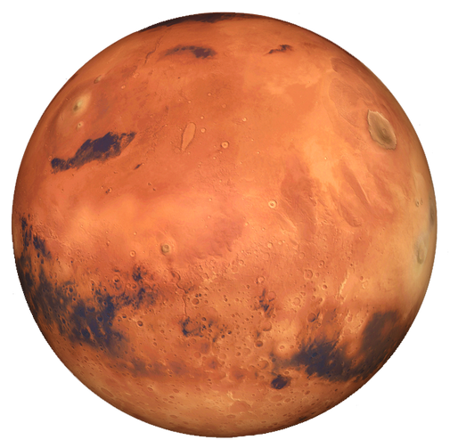

<!DOCTYPE html>
<html lang="de">
<head>
    <meta charset="UTF-8">
    <meta name="viewport" content="width=device-width, initial-scale=1.0">
    <title>Cosmio</title>
    <!-- Custom CSS -->
    <link rel="stylesheet" href="../style.css">
    <!-- Custom JS -->
    <script src="../script.js" defer></script>
    <!-- favicon -->
    <link rel="icon" href="../assets/favicon.png" type="image/x-icon">
    <!-- font awesome -->
    <link rel="stylesheet" href="https://cdnjs.cloudflare.com/ajax/libs/font-awesome/6.6.0/css/all.min.css" integrity="sha512-Kc323vGBEqzTmouAECnVceyQqyqdsSiqLQISBL29aUW4U/M7pSPA/gEUZQqv1cwx4OnYxTxve5UMg5GT6L4JJg==" crossorigin="anonymous" referrerpolicy="no-referrer" />
    <!-- Google Font Orbitron -->
    <link rel="preconnect" href="https://fonts.googleapis.com">
    <link rel="preconnect" href="https://fonts.gstatic.com" crossorigin>
    <link href="https://fonts.googleapis.com/css2?family=Orbitron:wght@400..900&display=swap" rel="stylesheet">
    <!-- Google Font Roboto -->
    <link rel="preconnect" href="https://fonts.googleapis.com">
    <link rel="preconnect" href="https://fonts.gstatic.com" crossorigin>
    <link href="https://fonts.googleapis.com/css2?family=Roboto:ital,wght@0,100;0,300;0,400;0,500;0,700;0,900;1,100;1,300;1,400;1,500;1,700;1,900&display=swap" rel="stylesheet">
    <!-- Model Viewer -->
    <script type="module" src="https://unpkg.com/@google/model-viewer@v1.11.1/dist/model-viewer.min.js"></script>
    <!-- Manifest -->
    <link rel="manifest" href="manifest.json">
</head>

<body data-language="de">
    <div class="preloader">
        <div class="loader">
            <div class="circle small"></div>
            <div class="circle big"></div>
        </div>
    </div>

    <aside id="sidebar" class="show">
        <div class="language">
            <a href="#" class="active">
                
            </a>
            <a href="../index.html">
                
            </a>
        </div>
        <a href="#" class="heading">
            <h1>Cosmio</h1>
            <p>Erkunde das Universum</p>
        </a>
        <nav>
            <ul>
                <div class="wrapper">
                    <li><a href="#" data-sf="false" data-src="../assets/3D Models/Sonnensystem/scene-draco.gltf" data-fw="60deg">Sonnensystem</a></li>
                    <li><a href="#" data-sf="false" data-src="../assets/3D Models/Sonne-draco.glb">Sonne</a></li>
                    <li><a href="#" data-sf="false" data-src="../assets/3D Models/Merkur/scene-draco.gltf">Merkur</a></li>
                    <li><a href="#" data-sf="false" data-src="../assets/3D Models/Venus-draco.glb">Venus</a></li>
                    <li><a href="#" data-sf="false" data-src="../assets/3D Models/Erde/scene-draco.gltf">Erde</a></li>
                    <li><a href="#" data-sf="false" data-src="../assets/3D Models/Mars/scene-draco.gltf">Mars</a></li>
                    <li><a href="#" data-sf="false" data-src="../assets/3D Models/Jupiter/scene-draco.gltf">Jupiter</a></li>
                    <li><a href="#" data-sf="true" data-src="https://sketchfab.com/models/c09a1970148c43ad99db134a9d6d00b5/embed?ui_animations=0&ui_infos=0&ui_stop=0&ui_inspector=0&ui_watermark_link=0&ui_watermark=0&ui_hint=0&ui_ar=0&ui_help=0&ui_settings=0&ui_vr=0&ui_fullscreen=0&ui_annotations=0&dnt=1">Saturn</a></li>
                    <li><a href="#" data-sf="true" data-src="https://sketchfab.com/models/0009a69dbace44608c0bd09af9ba20db/embed?ui_animations=0&ui_infos=0&ui_stop=0&ui_inspector=0&ui_watermark_link=0&ui_watermark=0&ui_hint=0&ui_ar=0&ui_help=0&ui_settings=0&ui_vr=0&ui_fullscreen=0&ui_annotations=0&dnt=1">Uranus</a></li>
                    <li><a href="#" data-sf="false" data-src="../assets/3D Models/Neptun/scene-draco.gltf">Neptun</a></li>
                    <span class="show-more"><i class="fa-solid fa-chevron-down"></i><span>Mehr anzeigen</span></span>
                    <div class="more">
                        <li><a href="#" data-sf="false" data-src="../assets/3D Models/Mond/scene-draco.gltf">Mond</a></li>
                        <li><a href="#" data-sf="false" data-src="../assets/3D Models/Europa/scene-draco.gltf">Europa</a></li>
                        <li><a href="#" data-sf="false" data-src="../assets/3D Models/Ceres/scene-draco.gltf">Ceres</a></li>
                        <li><a href="#" data-sf="false" data-src="../assets/3D Models/Pluto/scene-draco.gltf">Pluto</a></li>
                        <li><a href="#" data-sf="false" data-src="../assets/3D Models/Planet X-draco.glb">Planet X</a></li>
                        <li><a href="#" data-sf="false" data-src="../assets/3D Models/Asteroid/scene-draco.gltf">Asteroid</a></li>
                        <li><a href="#" data-sf="false" data-src="../assets/3D Models/Komet.glb">Komet</a></li>
                        <li><a href="#" data-sf="false" data-src="../assets/3D Models/Iss/scene-draco.gltf">ISS</a></li>
                        <li><a href="#" data-sf="false" data-src="../assets/3D Models/Hubble/scene-draco.gltf">Hubble</a></li>
                        <li><a href="#" data-sf="false" data-src="../assets/3D Models/Sputnik/scene-draco.gltf">Sputnik</a></li>
                        <li><a href="#" data-sf="false" data-src="../assets/3D Models/Voyager/scene-draco.gltf">Voyager</a></li>
                        <li><a href="#" data-sf="true" data-src="https://sketchfab.com/models/e4ba8a064ae0432d96aae05d9a07a04d/embed?ui_hint=0&dnt=1" data-cut="true">Dyson Sphäre</a></li>
                        <li><a href="#" data-sf="true" data-src="https://sketchfab.com/models/8a554fd7184c4a1899c214b5c0298eab/embed?ui_hint=0&dnt=1" data-cut="true">Stellare Wiege</a></li>
                        <li><a href="#" data-sf="true" data-src="https://sketchfab.com/models/4c3421a983c0439da40508b637e89725/embed?ui_animations=0&ui_infos=0&ui_stop=0&ui_inspector=0&ui_watermark_link=0&ui_watermark=0&ui_hint=0&ui_ar=0&ui_help=0&ui_settings=0&ui_vr=0&ui_fullscreen=0&ui_annotations=0&dnt=1">Protostern</a></li>
                        <li><a href="#" data-sf="true" data-src="https://sketchfab.com/models/ff35368dd2644487b20c588c1e65bece/embed?ui_animations=0&ui_infos=0&ui_stop=0&ui_inspector=0&ui_watermark_link=0&ui_watermark=0&ui_hint=0&ui_ar=0&ui_help=0&ui_settings=0&ui_vr=0&ui_fullscreen=0&ui_annotations=0&dnt=1">Protoplanet</a></li>
                        <li><a href="#" data-sf="true" data-src="https://sketchfab.com/models/2a750aef938642a7b1135e9b4613da37/embed?ui_animations=0&ui_infos=0&ui_stop=0&ui_inspector=0&ui_watermark_link=0&ui_watermark=0&ui_hint=0&ui_ar=0&ui_help=0&ui_settings=0&ui_vr=0&ui_fullscreen=0&ui_annotations=0&dnt=1">Helixnebel</a></li>
                        <li><a href="#" data-sf="true" data-src="https://sketchfab.com/models/606b7fe570dd4ae38e59fe3acf81e8a0/embed?ui_animations=0&ui_infos=0&ui_stop=0&ui_inspector=0&ui_watermark_link=0&ui_watermark=0&ui_hint=0&ui_ar=0&ui_help=0&ui_settings=0&ui_vr=0&ui_fullscreen=0&ui_annotations=0&dnt=1">Supernova</a></li>
                        <li><a href="#" data-sf="true" data-src="https://sketchfab.com/models/7f1336d84b944e8a888b714057a9b9da/embed?ui_animations=0&ui_infos=0&ui_stop=0&ui_inspector=0&ui_watermark_link=0&ui_watermark=0&ui_hint=0&ui_ar=0&ui_help=0&ui_settings=0&ui_vr=0&ui_fullscreen=0&ui_annotations=0&dnt=1">Krebsnebel</a></li>
                        <li><a href="#" data-sf="true" data-src="https://sketchfab.com/models/cc16104dfcd04338abc997a3156a25b3/embed?ui_animations=0&ui_infos=0&ui_stop=0&ui_inspector=0&ui_watermark_link=0&ui_watermark=0&ui_hint=0&ui_ar=0&ui_help=0&ui_settings=0&ui_vr=0&ui_fullscreen=0&ui_annotations=0&dnt=1">Mag. Wolken</a></li>
                        <li><a href="#" data-sf="false" data-src="../assets/3D Models/Schwarzes Loch.glb" data-fw="120deg">Schwarzes Loch</a></li>
                        <li><a href="#" data-sf="true" data-src="https://sketchfab.com/models/c48972411beb4273a6226c6ca2eb9163/embed?ui_animations=0&ui_infos=0&ui_stop=0&ui_inspector=0&ui_watermark_link=0&ui_watermark=0&ui_hint=0&ui_ar=0&ui_help=0&ui_settings=0&ui_vr=0&ui_fullscreen=0&ui_annotations=0&dnt=1">Quasar</a></li>
                        <li><a href="#" data-sf="true" data-src="https://sketchfab.com/models/c876c7449be643f196beed027b1b14b4/embed?ui_animations=0&ui_infos=0&ui_stop=0&ui_inspector=0&ui_watermark_link=0&ui_watermark=0&ui_hint=0&ui_ar=0&ui_help=0&ui_settings=0&ui_vr=0&ui_fullscreen=0&ui_annotations=0&dnt=1">Pulsar</a></li>
                        <li><a href="#" data-sf="true" data-src="https://sketchfab.com/models/6e3e64df5f4b486ea684557b2406c53b/embed?ui_animations=0&ui_infos=0&ui_stop=0&ui_inspector=0&ui_watermark_link=0&ui_watermark=0&ui_hint=0&ui_ar=0&ui_help=0&ui_settings=0&ui_vr=0&ui_fullscreen=0&ui_annotations=0&dnt=1">Betelgeuse</a></li>
                        <li><a href="#" data-sf="false" data-src="../assets/3D Models/Polarstern/scene-draco.gltf">Polarstern</a></li>
                        <li><a href="#" data-sf="false" data-src="../assets/3D Models/Sirius/scene-draco.gltf">Sirius</a></li>
                        <li><a href="#" data-sf="true" data-src="https://sketchfab.com/models/c446f4dded6943299c81f26509c473ea/embed?ui_hint=0&dnt=1" data-cut="true">Stephenson</a></li>
                        <li><a href="#" data-sf="false" data-src="../assets/3D Models/Kepler22b/scene-draco.gltf">Kepler 22b</a></li>
                        <li><a href="#" data-sf="false" data-src="../assets/3D Models/Proxima Centauri b-draco.glb">Proxima b</a></li>
                        <li><a href="#" data-sf="true" data-src="https://sketchfab.com/models/5bcff94396d34cca9209f2177a110d42/embed?ui_animations=0&ui_infos=0&ui_stop=0&ui_inspector=0&ui_watermark_link=0&ui_watermark=0&ui_hint=0&ui_ar=0&ui_help=0&ui_settings=0&ui_vr=0&ui_fullscreen=0&ui_annotations=0&dnt=1">Binär System</a></li>
                        <li><a href="#" data-sf="true" data-src="https://sketchfab.com/models/eb0087b800414744b4cee3440888088c/embed?ui_hint=0&dnt=1" data-cut="true">Milchstraße</a></li>
                        <li><a href="#" data-sf="true" data-src="https://sketchfab.com/models/7de529db0d384e118b7ae8d63a8bab80/embed?ui_hint=0&dnt=1" data-cut="true">Andromeda</a></li>
                        <li><a href="#" data-sf="true" data-src="https://sketchfab.com/models/12af810acf984bca85d6f889f0ef7a97/embed?ui_animations=0&ui_infos=0&ui_stop=0&ui_inspector=0&ui_watermark_link=0&ui_watermark=0&ui_hint=0&ui_ar=0&ui_help=0&ui_settings=0&ui_vr=0&ui_fullscreen=0&ui_annotations=0&dnt=1">Beob. Universum</a></li>
                        <li><a href="#" data-sf="true" data-src="https://sketchfab.com/models/40d67c7dceb741dcb1c019a3c02fb5a8/embed?ui_animations=0&ui_infos=0&ui_stop=0&ui_inspector=0&ui_watermark_link=0&ui_watermark=0&ui_hint=0&ui_ar=0&ui_help=0&ui_settings=0&ui_vr=0&ui_fullscreen=0&ui_annotations=0&dnt=1">Kosmisches Netz</a></li>
                        <li><a href="#" data-sf="false" data-src="../assets/3D Models/Multiversum-draco.glb">Multiversum</a></li>
                    </div>
                <!-- Rocket -->
                
            </ul>
        </nav>
        <div class="hamburger isX">
            <div class="bar one"></div>
            <div class="bar two"></div>
            <div class="bar three"></div>
        </div>
    </aside>

    <div class="page">

        <div class="viewer">
            <div class="MWLoader">3D Modell wird geladen <span class="dots"></span> </div>
            <model-viewer src="../assets/3D Models/Sonnensystem/scene.gltf" alt="3D-Modell" auto-rotate camera-controls touch-action="manipulation" background-color="transparent"
            shadow-intensity="0" interaction-prompt="none" field-of-view="60deg"></model-viewer>

            <div class="sketchfab-embed-wrapper"> <iframe frameborder="0" allow="autoplay; fullscreen; xr-spatial-tracking" xr-spatial-tracking execution-while-out-of-viewport execution-while-not-rendered web-share src=""> </iframe> </div>

            <button class="button viewInfo">
                Siehe Info
                <div class="arrow-wrapper">
                    <div class="arrow"></div>
                </div>
            </button>
        </div>

        <div class="info active">
            <h1>Sonnensystem</h1>
            <p>
                Das Sonnensystem ist eine Ansammlung von Himmelskörpern, die durch die Gravitationskraft der Sonne,
                die im Zentrum sitzt, zusammengehalten werden.
                Es besteht aus acht Planeten, Monden, fünf Zwergplaneten, Asteroiden, Kometen und verschiedenen anderen
                Objekten, die alle die Sonne umkreisen. Die Planeten werden in drei Hauptgruppen unterteilt: <br><br>
                Die erdähnlichen Planeten: Merkur, Venus, Erde und Mars <br>
                Die Gasriesen: Jupiter und Saturn <br>
                Die Eisriesen: Uranus und Neptun. <br><br>
                Das Sonnensystem entstand vor etwa 4,6 Milliarden Jahren aus einer kollabierenden Wolke aus Gas und
                Staub, die als stellare Wiege bezeichnet wird. Als die Nebelwolke unter ihrer eigenen Schwerkraft
                zusammenfiel, sammelte sich der Großteil des Materials im Zentrum, um den Protostern zu bilden, während
                sich der Rest zu einer Scheibe abflachte, in der sich nach und nach Planeten und andere Objekte formten. <br><br>
                Die Sonne, der zentrale Stern, liefert die Energie, die für das Leben auf der Erde notwendig ist. Sie besteht
                hauptsächlich aus Wasserstoff, der durch Kernfusion zu Helium wird und so das Licht und die Wärme erzeugt, die
                das Sonnensystem erhalten. <br><br>
                Die inneren Planeten – Merkur, Venus, Erde und Mars – sind felsig und haben feste Oberflächen. Die Erde ist der einzige
                bekannte Planet, der Leben beherbergt, dank ihres flüssigen Wassers, der schützenden Atmosphäre und des schützenden Magnetfelds. <br><br>
                Die äußeren Planeten – Jupiter, Saturn, Uranus und Neptun – sind Gas- und Eisriesen. Diese Planeten sind viel größer
                als die inneren Planeten und bestehen größtenteils aus Wasserstoff, Helium und anderen Gasen. <br><br>
                Das Sonnensystem enthält auch den Asteroidengürtel, der sich zwischen Mars und Jupiter befindet. Diese Region ist
                gefüllt mit felsigen Objekten, die sich aufgrund der starken Gravitation des Jupiters nie zu einem Planeten
                zusammenschließen konnten. Der Asteroidengürtel beherbergt auch den Zwergplaneten Ceres, und die meisten bekannten
                Asteroiden stammen aus dieser Region. <br><br>
                Jenseits des Neptuns liegt der Kuipergürtel, eine Region voller eisiger Objekte, darunter Zwergplaneten wie Pluto. <br><br>
                Weiter draußen markiert die Heliosphäre die Grenze, an der der Einfluss der Sonne endet und der interstellare Raum beginnt.
                Die Heliosphäre ist eine riesige, blasenförmige Region des Raumes, die vom Sonnenwind dominiert wird – einem kontinuierlichen
                Strom geladener Teilchen, die von der Sonne ausgehen – und sich weit über die äußeren Planeten hinaus erstreckt. Dieser
                Sonnenwind schafft eine Schutzzone um unser Sonnensystem, indem er gegen interstellare Teilchen drückt und so eine Grenze
                bildet. Am äußersten Rand der Heliosphäre liegt die Heliopause, eine Übergangsgrenze, an der der Einfluss des Sonnenwinds
                nachlässt und der Druck von interstellaren Teilchen dominiert, was den Beginn des interstellaren Raums markiert. <br><br>
                Jenseits der Heliopause und weit in den Raum hinein erstreckt sich die Oortsche Wolke, eine riesige, kugelförmige Hülle
                aus eisigen Körpern und Kometen, die das Sonnensystem umgeben soll. Die Oortsche Wolke wird als die äußerste Grenze des
                Sonnensystems angesehen. Sie reicht von etwa 2.000 bis 100.000
                astronomischen Einheiten (AE) von der Sonne entfernt und erstreckt sich fast zwei Lichtjahre in den Weltraum. Die Oortsche
                Wolke repräsentiert die äußersten Bereiche des Sonnensystems, wo die Schwerkraft der Sonne nur noch einen schwachen
                Einfluss auf diese fernen, eisigen Objekte hat.
            </p>
            <button class="button explore">
                Erkunden
                <div class="arrow-wrapper">
                    <div class="arrow"></div>
                </div>
            </button>
        </div>

        <div class="info">
            <h1>Sonne</h1>
            <p>
                Die Sonne ist der zentrale Stern unseres Sonnensystems und die primäre Energiequelle für das Leben auf der Erde.
                Sie ist ein Hauptreihenstern, genauer gesagt ein gelber Zwergstern, der durch Kernfusion in seinem Kern Energie produziert.
                Die Sonne entstand vor etwa 4,6 Milliarden Jahren aus einer Wolke aus Gas und Staub, einer sogenannten stellaren Wiege.
                Sie hat genug Brennstoff, um noch weitere 5 Milliarden Jahre zu leuchten, bevor sie sich zu einem Roten Riesen ausdehnt
                und später ihre äußeren Schichten als planetarischen Nebel abstößt, wobei ein Weißer Zwerg zurückbleibt. <br><br>
                Unsere Sonne besteht hauptsächlich aus Wasserstoff (etwa 74 %) und Helium (rund 24 %), mit Spuren schwerer Elemente wie
                Kohlenstoff, Sauerstoff und Eisen. Im Kern, wo die Temperaturen etwa 15 Millionen Grad Celsius (27 Millionen Grad Fahrenheit)
                erreichen, verschmelzen Wasserstoffatome zu Helium und setzen dabei eine enorme Menge an Energie in Form von Licht und Wärme
                frei. Dieser Fusionsprozess erzeugt Licht und Strahlung, die durch die Schichten der Sonne reisen und schließlich die Erde
                erreichen und das für das Leben notwendige Licht und die Wärme bereitstellen. <br><br>
                Die Sonne ist ein relativ stabiler Stern, aber sie durchläuft Phasen erhöhter Aktivität, bekannt als Sonnenzyklus,
                der etwa 11 Jahre dauert. Während Phasen hoher Aktivität, bekannt als Sonnenmaximum, treten vermehrt Sonnenflecken,
                Sonneneruptionen, Sonnenwinde und koronale Massenauswürfe (CMEs) auf. <br><br>
                Sonnenflecken sind dunkle, kühlere Bereiche auf der Sonnenoberfläche, die durch magnetische Aktivität verursacht werden.
                Oft sind sie die Ausgangspunkte für Sonneneruptionen und CMEs. <br><br>
                Sonneneruptionen sind plötzliche Ausbrüche intensiver Strahlung aus diesen aktiven Bereichen. Sie setzen große Mengen
                an Energie und Strahlung über das elektromagnetische Spektrum frei, was die Erde fast sofort beeinflussen kann,
                indem es Funksignale stört und Hochfrequenzkommunikation unterbricht. <br><br>
                Der Sonnenwind ist ein kontinuierlicher Strom geladener Teilchen, hauptsächlich Elektronen und Protonen, der von der
                oberen Atmosphäre der Sonne (Korona) nach außen strömt. Der Sonnenwind durchzieht das Sonnensystem und erzeugt einen
                "Wind", der mit den Magnetfeldern der Planeten interagiert. Das Magnetfeld der Erde lenkt einen Großteil des Sonnenwinds
                ab und schützt uns so vor seiner schädlichen Strahlung. <br><br>
                Koronale Massenauswürfe (CMEs) hingegen sind massive Ausbrüche von Plasma und Magnetfeldern, die aus der
                Sonnenkorona freigesetzt werden. Im Gegensatz zum stetigen Sonnenwind sind CMEs explosiv und hochenergetisch,
                wobei sie Milliarden Tonnen an Sonnenmaterial mit hoher Geschwindigkeit ausstoßen. Wenn ein CME auf die Erde
                gerichtet ist, kann er innerhalb weniger Tage mit dem Magnetfeld der Erde kollidieren und einen geomagnetischen
                Sturm verursachen, der Polarlichter verstärkt und möglicherweise Satelliten, Stromnetze und Kommunikationssysteme stört. <br><br>
                Die Gravitation der Sonne hält das Sonnensystem zusammen und sorgt dafür, dass Planeten, Asteroiden und Kometen in ihren
                Umlaufbahnen bleiben. Als dominierende Gravitationskraft in unserem Sonnensystem prägt die Sonne die Umlaufbahnen und
                die Stabilität aller umliegenden Himmelskörper.
            </p>
            <button class="button explore">
                Erkunden
                <div class="arrow-wrapper">
                    <div class="arrow"></div>
                </div>
            </button>
        </div>

        <div class="info">
            <h1>Merkur</h1>
            <p>
                Merkur ist der kleinste und sonnennächste Planet im Sonnensystem, mit einem Durchmesser von etwa 4.880 Kilometern.
                Er besitzt keine signifikante Atmosphäre, was bedeutet, dass er keine Wärme speichern kann, was zu extremen
                Temperaturschwankungen führt. Die Tagestemperaturen können auf 430 °C steigen, während die Temperaturen in der
                Nacht aufgrund fehlender atmosphärischer Isolierung auf -180 °C sinken. <br><br>
                Die Oberfläche des Merkur ist stark verkratert, ähnlich wie die des Mondes, da der Planet über Milliarden von
                Jahren hinweg von Meteoroiden und Kometen bombardiert wurde. <br><br>
                Durch seine Nähe zur Sonne hat Merkur sehr kurze Jahre und benötigt nur 88 Erdentage, um eine Umlaufbahn zu vollenden.
                Allerdings rotiert er sehr langsam und benötigt 59 Erdentage für eine Umdrehung um seine eigene Achse, was zu den
                extremen Temperaturschwankungen beiträgt. <br><br>
                Trotz seiner lebensfeindlichen Umgebung deuten neuere Erkenntnisse darauf hin, dass Merkur möglicherweise
                Wassereis in dauerhaft schattigen Kratern an seinen Polen besitzt. Diese Regionen werden nie von Sonnenlicht
                erreicht, wodurch die Temperaturen niedrig genug bleiben, um das Eis zu erhalten. Diese Entdeckung hat Wissenschaftler
                neugierig gemacht, da sie neue Fragen zur Vergangenheit des Planeten aufwirft.
            </p>
            <button class="button explore">
                Erkunden
                <div class="arrow-wrapper">
                    <div class="arrow"></div>
                </div>
            </button>
        </div>

        <div class="info">
            <h1>Venus</h1>
            <p>
                Die Venus ist von ähnlicher Größe wie die Erde und hat einen Durchmesser von etwa 12.104 Kilometern, jedoch eine dichte, toxische
                Atmosphäre, die hauptsächlich aus Kohlendioxid (etwa 96,5 %) und Schwefelsäurewolken besteht. Diese dichte Atmosphäre führt zu einem
                unkontrollierten Treibhauseffekt, der Venus zum heißesten Planeten im Sonnensystem macht, mit Oberflächentemperaturen von über 460 °C –
                sogar heißer als Merkur, obwohl sie weiter von der Sonne entfernt ist. Die dicke Atmosphäre und der enorme Oberflächendruck – etwa 92-mal
                höher als auf der Erde – machen die Venus zu einer äußerst lebensfeindlichen Umgebung. <br><br>
                Wissenschaftler spekulieren seit Langem, dass Venus einst erdähnlicher gewesen sein könnte, mit flüssigem Wasser auf der
                Oberfläche und möglicherweise Bedingungen, die Leben ermöglichten. Es gibt Hinweise darauf, dass Venus bis zu 3 Milliarden Jahre
                lang Ozeane gehabt haben könnte, was die Frage aufwirft, ob sie in der fernen Vergangenheit mikrobielles Leben unterstützt haben
                könnte. Über die Zeit führten jedoch vermutlich vulkanische Aktivitäten und ein Anstieg der Treibhausgase zu dem unkontrollierten
                Treibhauseffekt, der die Venus in die extrem lebensfeindliche Umgebung verwandelte, die wir heute sehen. Die dicke
                Kohlendioxid-Atmosphäre hält die Wärme fest, und Schwefelsäurewolken tragen zur giftigen Umgebung bei. Diese extremen
                Klimabedingungen machen die Venus zu einem wichtigen Studienobjekt für das Verständnis des Klimawandels und der möglichen
                Entwicklung der Erdatmosphäre unter bestimmten Bedingungen. <br><br>
                Eine der einzigartigen Eigenschaften der Venus ist ihre retrograde Rotation, was bedeutet, dass sie sich entgegengesetzt
                zu den meisten anderen Planeten dreht. Sie benötigt etwa 243 Erdentage für eine Rotation, was bedeutet, dass ein Tag auf
                der Venus länger ist als ihr Jahr, das etwa 225 Erdentage dauert. <br><br>
                Darüber hinaus hat die Venus keine Monde und zeigt, aufgrund ihrer Position zwischen Erde und Sonne, Phasen wie der
                Mond, wenn sie von der Erde aus beobachtet wird.
            </p>
            <button class="button explore">
                Erkunden
                <div class="arrow-wrapper">
                    <div class="arrow"></div>
                </div>
            </button>
        </div>

        <div class="info">
            <h1>Erde</h1>
            <p>
                Die Erde, der dritte Planet von der Sonne, ist der einzige bekannte Planet, der Leben beherbergt. Mit einem Durchmesser
                von 12.742 Kilometern ist die Erde größtenteils von Wasser bedeckt, das etwa 71 % ihrer Oberfläche ausmacht. <br><br>
                Das Klima und die lebensfreundlichen Bedingungen auf der Erde werden durch ihre Atmosphäre aufrechterhalten, die hauptsächlich
                aus Stickstoff (78 %) und Sauerstoff (21 %) besteht, mit Spuren anderer Gase. Die Existenz von Wasser in seinen drei Formen –
                flüssig, fest und gasförmig – sowie der stabile Temperaturbereich des Planeten unterstützen ein vielfältiges Ökosystem. <br><br>
                Das Magnetfeld der Erde, das durch den geschmolzenen äußeren Kern erzeugt wird, schützt den Planeten vor schädlichem Sonnenwind
                und kosmischer Strahlung. Dieses Magnetfeld trägt auch zur Entstehung der Polarlichter bei, die in der Nähe der Pole sichtbar sind. <br><br>
                Die Plattentektonik der Erde spielt eine wichtige Rolle beim Recycling von Kohlenstoff und anderen Materialien, was hilft,
                das Klima über lange Zeiträume zu regulieren. <br><br>
                Der Mond, der einzige natürliche Satellit der Erde, beeinflusst die Gezeiten und stabilisiert die Neigung der Erdachse,
                was wiederum das Klima der Erde stabilisiert. <br><br>
                Die Erde umkreist die Sonne in einer durchschnittlichen Entfernung von etwa 150 Millionen Kilometern, was ideale
                Bedingungen zur Aufrechterhaltung von flüssigem Wasser schafft – einem Schlüsselfaktor für Leben. Die Erdachse ist
                um etwa 23,5 Grad geneigt, was zu jahreszeitlichen Temperaturschwankungen und Klimaveränderungen führt.
            </p>
            <button class="button explore">
                Erkunden
                <div class="arrow-wrapper">
                    <div class="arrow"></div>
                </div>
            </button>
        </div>

        <div class="info">
            <h1>Mars</h1>
            <p>
                Mars, oft als "Roter Planet" bezeichnet, verdankt seine Farbe nicht nur seiner eisenoxidhaltigen Oberfläche, sondern
                besitzt auch zwei kleine Monde, Phobos und Deimos, die unregelmäßig geformt sind und möglicherweise eingefangene Asteroiden darstellen. <br><br>
                Die Schwerkraft auf Mars beträgt etwa 38 % derjenigen auf der Erde, was den Planeten zu einem faszinierenden Ziel für eine mögliche
                menschliche Erkundung macht. <br><br>
                Mars erlebt massive Staubstürme, die seine gesamte Oberfläche für Tage oder Wochen bedecken können. Der Planet beherbergt
                zudem den größten Vulkan im Sonnensystem, Olympus Mons, der etwa dreimal so hoch ist wie der Mount Everest, sowie den
                tiefsten Canyon, Valles Marineris, der sich über 4.000 Kilometer erstreckt. <br><br>
                Trotz der kalten Temperaturen besitzt Mars Polkappen aus Wasser- und Kohlendioxideis, die mit den Jahreszeiten
                wachsen und schrumpfen. Diese Eiskappen sowie Hinweise auf frühere Flussbetten und Seen lassen vermuten, dass Mars vor
                Milliarden von Jahren ein feuchteres und wärmeres Klima hatte. Daher suchen Wissenschaftler weiterhin nach Anzeichen für
                vergangenes Leben auf dem Mars. <br><br>
                Ein Grund für die heutige Kälte und Trockenheit auf dem Mars ist der Verlust seines Magnetfelds vor Milliarden von Jahren.
                Ohne ein starkes Magnetfeld war der Planet der Einwirkung von Sonnenwind und Strahlung ausgesetzt, die seine Atmosphäre nach
                und nach abtrugen. Ohne den Schutz einer dichten Atmosphäre verlor Mars die Fähigkeit, Wärme und Wasser zu halten. Dieser
                Verlust der Atmosphäre führte vermutlich zu einem drastischen Klimawandel und verwandelte den Mars von einer potenziell
                bewohnbaren Umgebung in die karge, lebensfeindliche Landschaft, die wir heute kennen.
            </p>
            <button class="button explore">
                Erkunden
                <div class="arrow-wrapper">
                    <div class="arrow"></div>
                </div>
            </button>
        </div>

        <div class="info">
            <h1>Jupiter</h1>
            <p>
                Jupiter ist der größte Planet im Sonnensystem mit einem Durchmesser von 139.820 Kilometern. Dieser Gasriese besteht
                hauptsächlich aus Wasserstoff und Helium und ist bekannt für den Großen Roten Fleck, einen riesigen Sturm, der größer
                als die Erde ist und seit Jahrhunderten tobt. <br><br>
                Jupiter besitzt außerdem ein schwaches Ringsystem, das hauptsächlich aus Staubpartikeln besteht. Der Planet hat ein
                starkes Magnetfeld und 92 bekannte Monde, darunter Europa. Es wird vermutet, dass sich unter Europas Eisschicht ein
                Ozean befindet, was diesen Mond zu einem der besten Kandidaten für außerirdisches Leben im Sonnensystem macht. Ein
                weiterer Mond, Ganymed, ist der größte Mond im Sonnensystem und sogar größer als der Planet Merkur. <br><br>
                Jupiter spielt eine wichtige Rolle im Sonnensystem, indem er als gravitativer Schutzschild für die Erde und andere
                innere Planeten fungiert. Durch seine enorme Größe und starke Anziehungskraft lenkt oder fängt Jupiter häufig Kometen
                und Asteroiden ab, die ansonsten eine Bedrohung für die inneren Planeten darstellen könnten. Diese Schutzfunktion
                verringert die Wahrscheinlichkeit großer Einschläge auf der Erde, die erhebliche Schäden oder sogar Massenaussterben
                verursachen könnten. Jupiters Schwerkraft trägt zudem zur Stabilisierung der Umlaufbahnen von Objekten im
                Asteroidengürtel bei und verhindert, dass sie mit der Erde kollidieren.
            </p>
            <button class="button explore">
                Erkunden
                <div class="arrow-wrapper">
                    <div class="arrow"></div>
                </div>
            </button>
        </div>

        <div class="info">
            <h1>Saturn</h1>
            <p>
                Saturn ist der zweitgrößte Planet im Sonnensystem und berühmt für sein ikonisches Ringsystem, eine der bemerkenswertesten
                Strukturen in unserer planetaren Nachbarschaft. Mit einem Durchmesser von etwa 116.460 Kilometern besteht Saturn, ähnlich
                wie Jupiter, hauptsächlich aus Wasserstoff und Helium. Dieser Gasriese hat eine relativ niedrige Dichte: Tatsächlich ist
                er der einzige Planet im Sonnensystem, der aufgrund seiner geringen Dichte in Wasser schwimmen würde. <br><br>
                Saturns Ringe sind eine der komplexesten und beeindruckendsten Strukturen im Sonnensystem. Sie bestehen hauptsächlich aus
                Eispartikeln, Felsbrocken und Staub. Man vermutet, dass die Ringe entstanden sind, als Kometen oder Asteroiden Saturn
                zu nahe kamen und durch seine starke Gravitation zerrissen wurden. Die Ringe erstrecken sich über eine beeindruckende
                Entfernung von etwa 282.000 Kilometern, sind jedoch überraschend dünn: im Durchschnitt nur 10 Meter bis 1 Kilometer dick. <br><br>
                Saturn hält mit 146 bestätigten Monden den Rekord für die meisten Monde im Sonnensystem. Diese Monde variieren stark in
                Größe und Zusammensetzung, und viele spielen eine bedeutende Rolle bei der Formung von Saturns Ringen. Der größte und
                bekannteste Mond Saturns ist Titan, ein massiver Mond, der größer ist als der Planet Merkur. Titan ist besonders faszinierend
                wegen seiner dichten Atmosphäre, die hauptsächlich aus Stickstoff sowie Spuren von Methan und anderen Kohlenwasserstoffen
                besteht. Die Atmosphäre ist dicht genug, um flüssige Methan- und Ethan-Seen und -Flüsse auf der Oberfläche zu ermöglichen,
                was Titan zu einem der interessantesten Orte im Sonnensystem für die Erforschung von präbiotischer Chemie und möglichem Leben macht. <br><br>
                Ein weiterer bemerkenswerter Mond ist Enceladus, ein kleiner, eisiger Mond, der für seine Geysire bekannt ist, die Wasserdampf
                und Eispartikel aus einem Ozean unter seiner Eiskruste ausstoßen. Diese Plumes bilden einen von Saturns schwachen äußeren Ringen,
                den E-Ring, und deuten auf die Möglichkeit eines unterirdischen Ozeans hin, der möglicherweise mikrobielles Leben beherbergen könnte. <br><br>
                Andere Monde, wie Mimas mit seinem riesigen Krater, der dem „Todesstern“ aus Star Wars ähnelt, und Iapetus, mit seiner
                auffälligen zweifarbigen Oberfläche, bereichern Saturns faszinierendes Mondsystem weiter. Rhea, Dione und Tethys sind weitere
                größere Monde mit einzigartigen geologischen Merkmalen, die durch vergangene Einschläge und gravitative Wechselwirkungen mit
                Saturn und seinen Ringen geformt wurden. <br><br>
                Saturns Atmosphäre ist dynamisch, mit Wolkenbändern und intensiven Stürmen. Ähnlich wie auf Jupiter gibt es schnelle Winde,
                die bis zu 1.800 Kilometer pro Stunde erreichen können. Eine der bemerkenswertesten Wettererscheinungen auf Saturn ist der
                sechseckige Sturm an seinem Nordpol, ein sechseckiges Strömungsmuster, das Wissenschaftler seit seiner Entdeckung fasziniert.
                Diese Sturmstruktur ist einzigartig für Saturn und trägt zu den Rätseln rund um den Gasriesen bei.
            </p>
            <button class="button explore">
                Erkunden
                <div class="arrow-wrapper">
                    <div class="arrow"></div>
                </div>
            </button>
        </div>

        <div class="info">
            <h1>Uranus</h1>
            <p>
                Uranus ist ein Gasriese mit einem Durchmesser von 50.724 Kilometern, der für seine ungewöhnliche Achsenneigung
                von 98 Grad bekannt ist, die dazu führt, dass er „auf der Seite“ rotiert. Diese extreme Neigung entstand
                wahrscheinlich durch eine Kollision mit einem großen Objekt in der frühen Geschichte des Planeten. Sie verleiht
                Uranus einzigartige Jahreszeiten, bei denen jeder Pol 42 Jahre lang kontinuierliches Sonnenlicht erfährt,
                gefolgt von 42 Jahren Dunkelheit. <br><br>
                Die Atmosphäre des Uranus besteht hauptsächlich aus Wasserstoff, Helium und Methan, was ihm eine blassblaue
                Farbe verleiht, da Methan rotes Licht absorbiert. Tief in seiner Atmosphäre könnten unter hohem Druck
                Kohlenstoffatome zu Diamanten kristallisieren, die möglicherweise durch die Schichten des Planeten „regnen“.
                Dieses „Diamantenregen“-Phänomen wird nur auf Uranus und Neptun im Sonnensystem vermutet. <br><br>
                Uranus hat ein schwaches Ringsystem mit 13 schmalen Ringen und wird von 27 bekannten Monden umkreist.
                Die größten darunter sind Titania, Oberon, Ariel, Umbriel und Miranda. Diese Monde zeigen eine abwechslungsreiche
                Landschaft mit Merkmalen wie Canyons und Graten, die auf frühere geologische Aktivitäten hindeuten. Darüber hinaus
                ist das Magnetfeld des Uranus geneigt und vom Zentrum versetzt, was eine komplexe magnetische Umgebung um den Planeten erzeugt.
            </p>
            <button class="button explore">
                Erkunden
                <div class="arrow-wrapper">
                    <div class="arrow"></div>
                </div>
            </button>
        </div>

        <div class="info">
            <h1>Neptun</h1>
            <p>
                Neptun ist der achte und am weitesten von der Sonne entfernte Planet in unserem Sonnensystem und bekannt für seine
                tiefblaue Farbe und dynamischen Wetterphänomene. Mit einem Durchmesser von etwa 49.244 Kilometern ist Neptun etwas
                kleiner als Uranus, hat jedoch eine größere Masse, was ihn dichter macht. Wie Uranus wird Neptun als Eisriese eingestuft,
                da er einen hohen Anteil an Wasser-, Ammoniak- und Methaneis unter seiner Wasserstoff- und Heliumatmosphäre enthält. <br><br>
                Die markante blaue Farbe Neptuns resultiert größtenteils aus dem Methan in seiner Atmosphäre, das rotes Licht absorbiert
                und blaues reflektiert. Diese Farbe deutet auch auf unbekannte Bestandteile hin, die den lebendigen Farbton verstärken.
                Neptuns Atmosphäre ist extrem aktiv, mit einigen der schnellsten jemals aufgezeichneten Winde im Sonnensystem,
                die Geschwindigkeiten von bis zu 2.100 Kilometern pro Stunde erreichen. Diese starken Winde treiben große Stürme
                über die Oberfläche des Planeten, darunter den berühmten Großen Dunklen Fleck, einen Sturm ähnlich dem Großen Roten
                Fleck auf Jupiter, der jedoch im Laufe der Zeit erschienen und wieder verschwunden ist. <br><br>
                Eines der faszinierendsten Merkmale von Neptun ist sein Ringsystem. Obwohl schwach und weniger auffällig als das von
                Saturn, besitzt Neptun mehrere schmale Ringe, die hauptsächlich aus Staub- und Eisteilchen bestehen. Diese Ringe sind
                wahrscheinlich relativ jung und möglicherweise das Ergebnis zerbrochener Monde oder anderer kleiner Körper, die Neptun
                umkreisten. Die Ringe sind unvollständig und bilden Bögen anstelle vollständiger Ringe, was einzigartig im Sonnensystem ist. <br><br>
                Neptun hat 14 bekannte Monde, von denen Triton der größte ist. Triton ist einzigartig, da er Neptun in entgegengesetzter
                Richtung zur Rotation des Planeten umkreist, was auf eine sogenannte retrograde Umlaufbahn hindeutet. Dies lässt vermuten,
                dass Triton ursprünglich von Neptuns Gravitation eingefangen wurde, anstatt sich gemeinsam mit dem Planeten zu bilden.
                Triton hat eine eisige Oberfläche mit aktiven Geysiren, die Stickstoffgas ausstoßen und auf geologische Aktivität hinweisen.
                Er ist einer der wenigen Monde im Sonnensystem, der eine Atmosphäre besitzt.
            </p>
            <button class="button explore">
                Erkunden
                <div class="arrow-wrapper">
                    <div class="arrow"></div>
                </div>
            </button>
        </div>

        <!-- more models -->

        <div class="info">
            <h1>Mond</h1>
            <p>
                Der Mond, der einzige natürliche Satellit der Erde, ist mit einem Durchmesser von etwa 3.474 Kilometern der fünftgrößte
                Mond im Sonnensystem. Er entstand vor etwa 4,5 Milliarden Jahren, als ein marsgroßer Protoplanet, oft "Theia" genannt,
                mit der jungen Erde kollidierte. Dieser Aufprall schleuderte große Mengen an Trümmern in die Umlaufbahn der Erde, aus
                denen sich schließlich der Mond formte. <br><br>
                Der Mond besteht hauptsächlich aus Silikatgestein und besitzt einen Kern aus Eisen und anderen Metallen. Seine
                Oberfläche ist von Kratern, Gebirgen und Maria – großen, dunklen Ebenen, die durch uralte vulkanische Aktivität
                entstanden – bedeckt. Im Gegensatz zur Erde hat der Mond keine Atmosphäre, was zu extremen Temperaturschwankungen
                führt: Tagsüber können die Temperaturen auf 127 °C steigen, während sie nachts auf -173 °C fallen. <br><br>
                Eine der bedeutendsten Auswirkungen des Mondes auf die Erde ist seine Anziehungskraft, die Gezeiten in den Ozeanen erzeugt.
                Der Mond stabilisiert auch die Neigung der Erdachse, was das Klima und die Jahreszeiten auf der Erde ausgleicht. Diese
                gravitative Wechselwirkung hat über die Zeit dazu geführt, dass der Mond durch die sogenannte gebundene Rotation immer
                dieselbe Seite zur Erde zeigt, die als „Vorderseite“ bekannt ist. <br><br>
                Der Mond ist für Wissenschaftler von großem Interesse, da er Einblicke in das frühe Sonnensystem bietet. Seine
                Oberfläche ist seit Milliarden von Jahren relativ unverändert und bewahrt eine Aufzeichnung uralter Einschläge
                und geologischer Prozesse. <br><br>
                Im 20. Jahrhundert wurde der Mond zum Zentrum menschlicher Weltraumforschung. Am 20. Juli 1969 landete
                die Apollo-11-Mission erfolgreich auf dem Mond, und die Astronauten Neil Armstrong und Buzz Aldrin betraten seine Oberfläche.
            </p>
            <button class="button explore">
                Erkunden
                <div class="arrow-wrapper">
                    <div class="arrow"></div>
                </div>
            </button>
        </div>

        <div class="info">
            <h1>Europa</h1>
            <p>
                Europa, einer der größten Monde des Jupiter, fasziniert Wissenschaftler seit Langem aufgrund überzeugender Hinweise auf
                einen riesigen unterirdischen Ozean unter seiner eisigen Kruste. Dieser verborgene Ozean, der möglicherweise doppelt so
                viel Wasser wie die Erde enthält, macht Europa zu einem Hauptkandidaten in der Suche nach außerirdischem Leben in
                unserem Sonnensystem. <br><br>
                Am 14. Oktober 2024 startete die NASA die Europa-Clipper-Mission an Bord einer SpaceX Falcon Heavy-Rakete vom
                Kennedy Space Center in Florida. Die Raumsonde soll voraussichtlich im April 2030 den Jupiter erreichen. Nach
                ihrer Ankunft wird Europa Clipper etwa 50 nahe Vorbeiflüge an Europa durchführen, bei denen sie bis auf 16 Meilen
                (etwa 26 Kilometer) an die Oberfläche des Mondes herankommt. <br><br>
                Das Hauptziel der Mission ist es, die Bewohnbarkeit Europas zu untersuchen, indem die Dicke seiner Eiskruste, die
                Tiefe und der Salzgehalt seines Ozeans sowie die Zusammensetzung und Geologie seiner Oberfläche untersucht werden.
                Dazu ist Europa Clipper mit einer Reihe von neun hochentwickelten wissenschaftlichen Instrumenten ausgestattet, darunter
                ein eisdurchdringendes Radar, Spektrometer und Magnetometer. <br><br>
                Die von Europa Clipper gesammelten Daten werden beispiellose Einblicke in Europas Potenzial zur Unterstützung
                von Leben bieten, unser Verständnis von Ozeanwelten erweitern und zukünftige Erkundungsmissionen unterstützen.
                Diese Mission stellt einen bedeutenden Fortschritt in der Astrobiologie und der Erforschung planetarer Systeme dar.
            </p>
            <button class="button explore">
                Erkunden
                <div class="arrow-wrapper">
                    <div class="arrow"></div>
                </div>
            </button>
        </div>

        <div class="info">
            <h1>Ceres</h1>
            <p>
                Ceres ist das größte Objekt im Asteroidengürtel zwischen Mars und Jupiter und der einzige offiziell anerkannte
                Zwergplanet im inneren Sonnensystem. Mit einem Durchmesser von etwa 940 Kilometern ist Ceres zwar deutlich kleiner
                als die Erde, aber dennoch massereich genug, um durch seine eigene Schwerkraft zu einer kugelförmigen Gestalt geformt
                zu werden. Diese runde Form unterscheidet Ceres von kleineren, unregelmäßig geformten Asteroiden in seiner Umgebung.
                Der italienische Astronom Giuseppe Piazzi entdeckte Ceres im Jahr 1801, und zunächst wurde es als Planet eingestuft,
                später jedoch aufgrund seiner einzigartigen Merkmale als Zwergplanet klassifiziert. <br><br>
                Ceres ist besonders faszinierend, da seine Oberfläche und Zusammensetzung darauf hindeuten, dass er eine beträchtliche
                Menge an Wassereis enthält. Wissenschaftler vermuten, dass sich unter seiner Kruste eine Schicht aus gefrorenem Wasser
                und möglicherweise sogar ein unterirdischer Ozean befindet. Hinweise auf Wasserdampf wurden ebenfalls um Ceres herum entdeckt,
                was darauf schließen lässt, dass Wassereis an seiner Oberfläche unter der Sonnenstrahlung sublimiert und eine sehr dünne,
                kurzlebige Atmosphäre bildet. Diese Aktivität deutet darauf hin, dass Ceres möglicherweise immer noch geologisch aktiv ist,
                obwohl er viel kleiner und kälter als andere Himmelskörper ist. <br><br>
                Ceres hat auch eine besondere Bedeutung als eine Art Zeitkapsel aus der Frühzeit des Sonnensystems. Als eines der
                ältesten Objekte in unserer planetaren Nachbarschaft gibt er Aufschluss über die Bausteine der Planeten und die
                Verteilung von Wasser im inneren Sonnensystem. Das Studium von Ceres hilft Wissenschaftlern, besser zu verstehen,
                wie Wasser und andere wesentliche Materialien zu den Gesteinsplaneten transportiert wurden und möglicherweise eine
                Rolle bei der Schaffung lebensfreundlicher Bedingungen auf der Erde spielten. <br><br>
                Aufgrund seiner einzigartigen Eigenschaften und seiner relativen Nähe im Vergleich zu den Zwergplaneten im Kuipergürtel
                bleibt Ceres ein wichtiges Ziel für zukünftige Weltraummissionen.
            </p>
            <button class="button explore">
                Erkunden
                <div class="arrow-wrapper">
                    <div class="arrow"></div>
                </div>
            </button>
        </div>

        <div class="info">
            <h1>Pluto</h1>
            <p>
                Pluto ist ein Zwergplanet im Kuipergürtel, einer Region jenseits von Neptun, die voller eisiger Objekte und
                Überreste des frühen Sonnensystems ist. 1930 von Clyde Tombaugh entdeckt, galt Pluto lange als der neunte Planet
                unseres Sonnensystems. Doch 2006 wurde er von der Internationalen Astronomischen Union (IAU) aufgrund seiner
                geringen Größe und der Tatsache, dass er seine Umlaufbahn nicht von anderen Objekten freigeräumt hat, als Zwergplanet
                eingestuft. Neben Pluto zählen auch Eris, Haumea, Makemake und Ceres zu den anerkannten Zwergplaneten unseres Sonnensystems. <br><br>
                Mit einem Durchmesser von etwa 2.377 Kilometern ist Pluto der größte Zwergplanet, aber dennoch kleiner als der Mond der
                Erde und besteht hauptsächlich aus Eis und Gestein. Seine Oberfläche ist von Stickstoffeis bedeckt, das Spuren von
                Methan und Kohlenmonoxid enthält, und Wissenschaftler vermuten, dass sich unter dieser eisigen Kruste ein unterirdischer
                Ozean befinden könnte. Pluto hat zudem eine dünne Atmosphäre, die hauptsächlich aus Stickstoff besteht. Diese dehnt sich
                aus, wenn Pluto sich in seiner stark elliptischen Umlaufbahn der Sonne nähert, und gefriert auf die Oberfläche, wenn er
                sich weiter entfernt. <br><br>
                Eine der auffälligsten Eigenschaften Plutos ist seine besondere Beziehung zu seinem größten Mond Charon. Charon
                ist etwa halb so groß wie Pluto, und die beiden Körper sind gravitativ aneinander gebunden, sodass sie einander
                stets dieselbe Seite zeigen. Dies führt dazu, dass Pluto und Charon oft als Doppelsystem betrachtet werden, anstatt
                als klassische Planet-Mond-Konstellation. <br><br>
                Im Jahr 2015 lieferte die NASA-Mission New Horizons die ersten Nahaufnahmen von Pluto und enthüllte eine
                komplexe und vielfältige Landschaft mit Bergen aus Wassereis, Ebenen aus gefrorenem Stickstoff und Anzeichen
                vergangener geologischer Aktivität. Trotz seiner Neueinstufung bleibt Pluto ein faszinierendes Objekt in Wissenschaft
                und Popkultur, das weiterhin Diskussionen darüber auslöst, was einen Planeten definiert, und als eine der rätselhaftesten
                Welten unseres Sonnensystems die Vorstellungskraft beflügelt.
            </p>
            <button class="button explore">
                Erkunden
                <div class="arrow-wrapper">
                    <div class="arrow"></div>
                </div>
            </button>
        </div>

        <div class="info">
            <h1>Planet X</h1>
            <p>
                Planet X, auch bekannt als Planet 9, ist ein hypothetischer, bisher unentdeckter Planet, der möglicherweise in den
                äußersten Bereichen unseres Sonnensystems existiert, möglicherweise sogar in der oder nahe der Oortschen Wolke – einer
                entfernten, kugelförmigen Region eisiger Objekte, die die Grenze unseres Sonnensystems markiert. Die Idee von Planet X
                wurde vorgeschlagen, weil Astronomen ungewöhnliche Muster in den Umlaufbahnen bestimmter transneptunischer Objekte (TNOs)
                beobachtet haben, also kleiner Körper jenseits von Neptun. Diese Objekte zeigen ähnliche Ausrichtungen und Cluster in
                ihren Umlaufbahnen, was darauf hindeutet, dass ein unsichtbarer massiver Planet sie mit seiner Schwerkraft beeinflussen könnte. <br><br>
                Das Konzept von Planet X erregte 2016 ernsthafte Aufmerksamkeit, als die Astronomen Konstantin Batygin und Michael E.
                Brown bemerkten, dass die Umlaufbahnen einiger TNOs ungewöhnlich geklumpt und geneigt waren, sodass ein zufälliges Muster
                unwahrscheinlich erschien. Sie stellten die Hypothese auf, dass dieses Muster durch die Gravitationswirkung eines großen,
                fernen Planeten erklärt werden könnte, der weit jenseits von Neptun um die Sonne kreist und diese Objekte beeinflusst. Dieser
                Planet, falls er existiert, hätte wahrscheinlich eine Masse etwa 5–10 Mal so groß wie die der Erde und könnte entweder ein
                Supererde-Planet oder ein Eisriese ähnlich Uranus oder Neptun sein. <br><br>
                Simulationen und Berechnungen haben die Möglichkeit der Existenz von Planet X weiter unterstützt. Modelle,
                die die Anwesenheit eines massiven Planeten im äußeren Sonnensystem einschließen, können die ungewöhnlichen
                Umlaufbahneigenschaften dieser entfernten Objekte erfolgreich nachbilden. Ohne einen solchen Planeten sind die Muster
                in diesen Umlaufbahnen schwer zu erklären. Diese Simulationen deuten darauf hin, dass der gravitative Einfluss von
                Planet X der fehlende Faktor sein könnte, der das äußere Sonnensystem formt, was die Hypothese zusätzlich stützt. <br><br>
                Falls Planet X existiert, wäre er vermutlich eine kalte, weit entfernte Welt mit einer Oberflächentemperatur nahe dem
                absoluten Nullpunkt, bedingt durch die enorme Entfernung zur Sonne. Er könnte eine Supererde mit dichter, felsiger
                oder eisiger Zusammensetzung sein oder möglicherweise ein kleiner Eisriese mit einer dichten Atmosphäre aus Wasserstoff
                und Helium. Planet X würde sich etwa 400 bis 800 astronomische Einheiten (AE) von der Sonne entfernt befinden, was ihn
                10 bis 25 Mal weiter entfernt als Neptun platzieren würde. Diese extreme Distanz würde ihn nahe der Oortschen Wolke
                positionieren, einer Region voller eisiger Körper, die sich noch weiter erstreckt und die äußerste Grenze des
                gravitativen Einflussbereichs der Sonne markiert. <br><br>
                Aufgrund seiner großen Entfernung würde Planet X die Sonne nur sehr langsam umkreisen und Tausende von Jahren benötigen,
                um eine einzige Umrundung zu vollenden. Sein schwaches Licht und seine langsame Bewegung machen ihn extrem schwer zu
                beobachten, was erklärt, warum er bisher der Entdeckung entgangen ist. Astronomen suchen nach Planet X mit fortschrittlichen
                Teleskopen und Infrarotaufnahmen, da er aufgrund seiner kalten Umgebung vermutlich schwache Infrarotstrahlung anstelle
                von sichtbarem Licht abgeben würde. <br><br>
                Die Existenz von Planet X bleibt unbestätigt, aber die ungewöhnlichen Umlaufbahnen der TNOs und die Ergebnisse
                von Computersimulationen stärken weiterhin die Annahme seiner Anwesenheit. Falls er entdeckt wird, würde Planet X
                unser Verständnis des Sonnensystems neu gestalten und zeigen, dass seine Struktur komplexer und umfangreicher ist
                als bisher angenommen. Er würde zudem wertvolle Einblicke in die Entstehung von Planeten in den äußersten Bereichen
                von Sternensystemen bieten, wo Sonnenlicht kaum vordringt und die Regeln der Planetenbildung an ihre Grenzen stoßen.
            </p>
            <button class="button explore">
                Erkunden
                <div class="arrow-wrapper">
                    <div class="arrow"></div>
                </div>
            </button>
        </div>

        <div class="info">
            <h1>Asteroid</h1>
            <p>
                Asteroiden sind kleine, felsige Objekte, die die Sonne umkreisen und sich hauptsächlich im Asteroidengürtel zwischen
                Mars und Jupiter befinden. Sie sind Überreste aus dem frühen Sonnensystem, die vor über 4,5 Milliarden Jahren entstanden,
                als sich Staub- und Gaspartikel um die Sonne zu größeren Körpern zusammenballten. Im Gegensatz zu Planeten sind Asteroiden
                zu klein, um eine runde Form anzunehmen, daher haben sie unregelmäßige Formen und variieren stark in ihrer Größe, von
                winzigen Gesteinsbrocken bis zu Hunderten von Kilometern Durchmesser. <br><br>
                Gelegentlich kommen Asteroiden in die Nähe der Erde, und während die meisten in ihrer Umlaufbahn bleiben, werden einige
                durch die Schwerkraft der Erde angezogen. Wenn ein Asteroid oder ein Fragment in die Erdatmosphäre eintritt, wird er als
                Meteoroid bezeichnet. Durch die Reibung mit der Atmosphäre erhitzt er sich und leuchtet auf, wodurch ein Meteor oder
                „Sternschnuppe“ entsteht. Normalerweise verglüht der Meteor vollständig aufgrund der intensiven Hitze und Reibung,
                aber wenn ein Teil des Meteoroid den Eintritt überlebt und auf die Erde fällt, wird er Meteorit genannt.
                Asteroiden können auch durch Gravitationsinteraktionen mit Planeten, insbesondere Jupiter, oder durch Zusammenstöße
                mit anderen Asteroiden aus dem Asteroidengürtel herausgedrängt werden. Dadurch gelangen einige auf Bahnen, die sie in
                die Nähe der Erde führen. Meteorschauer hingegen entstehen nicht durch Asteroiden, sondern durch Kometentrümmer.
                Wenn ein Komet sich der Sonne nähert, hinterlässt er eine Spur aus Staub und Gesteinspartikeln. Wenn die Erde diese
                Spur durchquert, treten viele Meteoroiden gleichzeitig in die Atmosphäre ein und erzeugen einen Meteorschauer, wie die
                Perseiden und die Orioniden, die jedes Jahr stattfinden, wenn die Erde die Trümmer bestimmter Kometen passiert. <br><br>
                Asteroiden, Meteoroiden, Meteore und Meteoriten sind alle miteinander verbundene Stadien im Lebensweg eines Gesteins
                aus dem All, von seinem Ursprung im Asteroidengürtel bis zu einem möglichen Einschlag auf der Erde. Diese
                Himmelsbesucher bieten Wissenschaftlern wertvolle Einblicke in die Zusammensetzung des frühen Sonnensystems
                und die Prozesse, die unsere planetare Nachbarschaft geformt haben.
            </p>
            <button class="button explore">
                Erkunden
                <div class="arrow-wrapper">
                    <div class="arrow"></div>
                </div>
            </button>
        </div>

        <div class="info">
            <h1>Komet</h1>
            <p>
                Kometen sind eisige Himmelskörper, die die Sonne umkreisen und hauptsächlich aus zwei entfernten Regionen des
                Sonnensystems stammen: dem Kuipergürtel, der sich knapp hinter Neptun befindet, und der Oortschen Wolke, einer
                riesigen, kugelförmigen Hülle, die das Sonnensystem an seinen äußersten Grenzen umgibt. Oft werden Kometen als
                „schmutzige Schneebälle“ bezeichnet, da sie aus gefrorenen Gasen, Staub und Gestein bestehen. Solange sie weit
                von der Sonne entfernt sind, bleiben Kometen kalt und inaktiv und erscheinen als kleine, feste Objekte. Doch
                sobald sie sich auf ihren langgestreckten Bahnen der Sonne nähern, beginnen sie sich zu erwärmen, und ihre eisigen
                Oberflächen verdampfen, wodurch eine leuchtende Koma (eine Wolke aus Gas und Staub) um den Kometenkern entsteht. <br><br>
                Eines der auffälligsten Merkmale eines Kometen ist sein Schweif. Durch die Wärme der Sonne verdampft das Eis des Kometen,
                und Sonnenstrahlung sowie der Sonnenwind treiben die Gas- und Staubpartikel vom Kometen weg, wodurch zwei unterschiedliche
                Schweife entstehen: ein Staubschweif, der das Sonnenlicht reflektiert und oft gekrümmt erscheint, und ein Ionen- oder
                Plasmaschweif, der aus geladenen Teilchen besteht und normalerweise gerade ist und direkt von der Sonne wegzeigt.
                Diese Schweife können sich über Millionen Kilometer erstrecken und verleihen dem Kometen, wenn er von der Erde aus
                sichtbar ist, sein spektakuläres Erscheinungsbild. <br><br>
                Während ein Komet durch den Weltraum reist, hinterlässt er entlang seiner Bahn Spuren von Staub und Gesteinspartikeln.
                Wenn die Erde eine dieser Spuren kreuzt, treten die Partikel in unsere Atmosphäre ein und verglühen, wodurch wir
                einen Meteorstrom beobachten können. Solche Meteorströme, wie die Perseiden (vom Kometen Swift-Tuttle) oder die
                Orioniden (vom Halleyschen Kometen), treten jährlich auf, wenn die Erde die Trümmerfelder dieser Kometen durchquert. <br><br>
                Kometen gehören zu den ältesten Objekten im Sonnensystem und enthalten Material aus den Anfangstagen seiner Entstehung.
                Durch ihre Untersuchung können Wissenschaftler Erkenntnisse über die Bedingungen vor Milliarden von Jahren gewinnen.
                Einige Kometen, wie der Halleysche Komet, haben vorhersehbare Umlaufbahnen und können in regelmäßigen Abständen von
                der Erde aus gesehen werden – der Halleysche Komet kehrt beispielsweise etwa alle 76 Jahre zurück. Andere Kometen
                haben längere, unvorhersehbare Umlaufbahnen und erscheinen nur einmal in Tausenden oder sogar Millionen von Jahren. <br><br>
                Kommt ein Komet der Erde nahe genug, kann sein Schweif am Nachthimmel oft über Tage, Wochen oder sogar Monate hinweg
                sichtbar sein, abhängig von seiner Größe, Geschwindigkeit und Umlaufbahn. Diese flüchtige Sichtbarkeit hat Menschen
                seit Jahrhunderten fasziniert und oft mit Mythen, Omen oder kosmischen Ereignissen in Verbindung gebracht.
            </p>
            <button class="button explore">
                Erkunden
                <div class="arrow-wrapper">
                    <div class="arrow"></div>
                </div>
            </button>
        </div>

        <div class="info">
            <h1>ISS</h1>
            <p>
                Die Internationale Raumstation (ISS) ist eine modulare Raumstation, die in etwa 400 Kilometern Höhe die
                Erde umkreist. Sie dient als einzigartiges Labor, in dem Astronauten aus aller Welt Experimente in
                verschiedenen wissenschaftlichen Bereichen wie Biologie, Physik, Astronomie und Materialwissenschaften
                in einer Mikrogravitationsumgebung durchführen. Die ISS ist ein gemeinsames Projekt von NASA (USA),
                Roscosmos (Russland), JAXA (Japan), ESA (Europa) und CSA (Kanada). Seit das erste Modul, Zarya, 1998
                gestartet wurde, ist die ISS kontinuierlich ausgebaut worden und seit dem Jahr 2000 dauerhaft von Astronauten bewohnt. <br><br>
                Die Station umkreist die Erde mit einer Geschwindigkeit von 28.000 Kilometern pro Stunde und schafft etwa 16 Umläufe
                pro Tag. Diese schnelle Umlaufbahn ermöglicht es den Besatzungsmitgliedern, täglich mehrere Sonnenauf- und -untergänge
                zu erleben und spektakuläre Ausblicke auf die Erde zu genießen. Die ISS besteht aus mehreren miteinander verbundenen
                Modulen, darunter Labore, Wohnbereiche und Andockpunkte für Raumfahrzeuge. Große Solarpaneele liefern der Station die
                notwendige Energie. <br><br>
                Ein Hauptziel der ISS ist es, Forschung unter Mikrogravitationsbedingungen zu ermöglichen, bei der Phänomene
                untersucht werden, die auf der Erde unter normaler Schwerkraft nicht beobachtet werden können. Die Forschung
                auf der ISS hat zu Fortschritten in Bereichen wie Medizin, Umweltwissenschaften und Technologie geführt, darunter
                Verbesserungen bei der Wasseraufbereitung, das Verständnis von Muskel- und Knochenschwund in niedriger Schwerkraft
                und die Entwicklung neuer Materialien. Die Erkenntnisse tragen zur Vorbereitung auf langfristige Weltraummissionen
                bei, wie etwa zur zukünftigen menschlichen Erforschung des Mars. <br><br>
                Astronauten leben für längere Zeiträume auf der ISS, normalerweise zwischen sechs Monaten und einem Jahr,
                und erleben das Leben in einer völlig anderen Umgebung. Zum täglichen Alltag gehören wissenschaftliche Arbeit,
                körperliches Training zur Bekämpfung der Effekte der Mikrogravitation auf Muskeln und Knochen sowie Wartungsarbeiten
                an der Station. Über Kommunikationssysteme können sie mit der Erde in Kontakt bleiben und erhalten regelmäßige
                Nachschublieferungen mit Lebensmitteln, Ausrüstung und Experimenten durch Frachtraumschiffe. <br><br>
                Die ISS gilt als eine der bedeutendsten Errungenschaften der Menschheit in der Raumfahrt und symbolisiert internationale
                Zusammenarbeit und das gemeinsame Engagement für den Fortschritt in Wissenschaft und Weltraumforschung. Mit Plänen,
                die ISS mindestens bis 2030 zu betreiben, ebnet sie weiterhin den Weg für die zukünftige Erforschung des Weltraums und
                liefert wertvolle Daten für langfristige menschliche Raumfahrt.
            </p>
            <button class="button explore">
                Erkunden
                <div class="arrow-wrapper">
                    <div class="arrow"></div>
                </div>
            </button>
        </div>

        <div class="info">
            <h1>Hubble</h1>
            <p>
                Das Hubble-Weltraumteleskop (HST) ist eines der ikonischsten und erfolgreichsten Teleskope in der
                Geschichte der Astronomie. 1990 von der NASA an Bord der Raumfähre Discovery gestartet, umkreist
                Hubble die Erde in einer Höhe von etwa 540 Kilometern und liefert atemberaubend detaillierte Bilder
                des Universums. Im Gegensatz zu bodengebundenen Teleskopen befindet sich Hubble über der Erdatmosphäre,
                sodass es den Weltraum ohne atmosphärische Verzerrungen beobachten kann. Dadurch entstehen unglaublich
                scharfe Aufnahmen, die unser Verständnis des Kosmos revolutioniert haben. <br><br>
                Hubble ist mit einer Reihe von Instrumenten ausgestattet, die Licht in verschiedenen Wellenlängen erfassen,
                darunter sichtbares Licht, ultraviolettes und nahes Infrarot. Diese Vielfalt ermöglicht es Wissenschaftlern,
                alles von fernen Galaxien und Nebeln bis hin zu nahen Planeten und Sternentstehungsgebieten zu untersuchen.
                Hubbles Weitwinkelkamera 3, das Cosmic Origins Spectrograph und andere fortschrittliche Instrumente haben
                einige der detailliertesten Bilder des tiefen Weltraums geliefert und uns klarere Einblicke in ferne Sterne,
                Galaxien sowie Phänomene wie Schwarze Löcher und Supernovae gegeben. <br><br>
                Eine von Hubbles berühmtesten Aufnahmen ist das „Hubble Deep Field“, das ein scheinbar leeres Stück Himmel
                in außergewöhnlicher Tiefe erfasste und Tausende von Galaxien offenbarte, die Milliarden Jahre alt sind.
                Dieses Bild allein veränderte unser Verständnis der Ausdehnung des Universums und der Anzahl der darin
                enthaltenen Galaxien. Hubble spielte auch eine zentrale Rolle bei der Messung der Expansionsrate des
                Universums und half dabei, dessen Alter auf etwa 13,8 Milliarden Jahre zu schätzen. <br><br>
                Hubble lieferte entscheidende Erkenntnisse über die Entstehung von Sternen, das Verhalten von Schwarzen Löchern,
                die Entwicklung von Galaxien und die Zusammensetzung von Exoplaneten-Atmosphären. Seine Beobachtungen führten
                zu bahnbrechenden Entdeckungen, einschließlich des Verständnisses der Dunklen Energie, einer mysteriösen Kraft,
                die die beschleunigte Expansion des Universums antreibt. Die Daten von Hubble haben Wissenschaftlern auch geholfen,
                Modelle der Sternentwicklung zu verfeinern und Einblicke in Planetensysteme jenseits unseres eigenen zu gewinnen. <br><br>
                Das Teleskop hat fünf Wartungsmissionen durch Astronauten erhalten, bei denen seine Instrumente aufgerüstet und
                seine Lebensdauer verlängert wurden. Diese Missionen haben Hubble funktionsfähig gehalten und ihm modernste
                Technologie bereitgestellt, sodass es mehr als drei Jahrzehnte nach seinem Start weiterhin wertvolle Daten liefert. <br><br>
                Hubbles Einfluss auf Wissenschaft und Populärkultur ist enorm. Es hat die Wunder des Universums der Öffentlichkeit
                nähergebracht und weltweit unzählige Menschen inspiriert. Auch wenn es irgendwann vom James-Webb-Weltraumteleskop und
                anderen fortschrittlichen Teleskopen abgelöst werden könnte, wird Hubbles Vermächtnis als bahnbrechendes Werkzeug
                fortbestehen, das unser Bild des Kosmos erweitert und das Verständnis der Menschheit für das Universum vertieft hat.
            </p>
            <button class="button explore">
                Erkunden
                <div class="arrow-wrapper">
                    <div class="arrow"></div>
                </div>
            </button>
        </div>

        <div class="info">
            <h1>Sputnik</h1>
            <p>
                Sputnik 1 war der erste künstliche Satellit der Welt, der am 4. Oktober 1957 von der Sowjetunion ins All geschickt
                wurde. Dieses historische Ereignis markierte den Beginn des Raumfahrtzeitalters und leitete das Wettrennen um
                die Vorherrschaft im Weltraum zwischen den Vereinigten Staaten und der Sowjetunion ein. Sputnik, was auf
                Russisch „Satellit“ oder „Begleiter“ bedeutet, war ein kleiner, kugelförmiger Satellit mit einem Durchmesser
                von etwa 58 Zentimetern und einem Gewicht von 83,6 Kilogramm. Ausgestattet mit vier langen Antennen und einem
                einfachen Funksender, der Signale sendete, konnte Sputnik verfolgt werden, während er die Erde umkreiste. <br><br>
                Der Satellit benötigte etwa 96 Minuten für eine Erdumrundung und bewegte sich dabei mit einer Geschwindigkeit von
                29.000 Kilometern pro Stunde. Die Signale von Sputnik konnten von Funkbetreibern weltweit empfangen werden, und
                sein Erfolg demonstrierte die technologischen Fähigkeiten der Sowjetunion im Weltraum. Dieses Ereignis sorgte
                in den USA für großen Schock und Besorgnis, da es die Möglichkeit aufzeigte, dass weltraumbasierte Technologie
                die globale Sicherheit beeinflussen könnte. Infolgedessen beschleunigten die USA ihr eigenes Raumfahrtprogramm,
                was 1958 zur Gründung der NASA führte. <br><br>
                Sputnik 1 trug außer dem Funksender keine wissenschaftlichen Instrumente, bewies jedoch, dass es möglich war, ein
                künstliches Objekt erfolgreich in die Umlaufbahn zu bringen. Die Signale von Sputnik, die 21 Tage lang, bis zum
                Ende der Batterielaufzeit, empfangen wurden, lieferten wertvolle Informationen über die Dichte der oberen
                Atmosphäre, indem der Luftwiderstand und der Orbitalabbau des Satelliten analysiert wurden. Sputnik 1 umkreiste
                die Erde etwa drei Monate lang und verglühte beim Wiedereintritt in die Atmosphäre am 4. Januar 1958. <br><br>
                Dem Start von Sputnik 1 folgte Sputnik 2, das im November 1957 das erste Lebewesen, die Hündin Laika, ins All
                brachte und so die frühe Führungsposition der Sowjetunion in der Weltraumforschung weiter festigte. Sputnik 1
                bleibt ein Symbol wissenschaftlicher Errungenschaften und wird weithin als der Beginn der Reise der Menschheit
                ins All angesehen. Dieses Meilensteinereignis in der Raumfahrtgeschichte entfachte nicht nur technologische
                Fortschritte, sondern inspirierte Generationen weltweit und leitete eine Ära rascher Entwicklungen in der
                Weltraumforschung ein. <br><br>
                Als Antwort auf den Start von Sputnik 1 beschleunigten die Vereinigten Staaten ihre eigenen Raumfahrtbemühungen.
                Dies führte am 31. Januar 1958 zum Start von Explorer 1, dem ersten amerikanischen Satelliten. Entwickelt von der
                Vorgängerorganisation der NASA, der U.S. Army Ballistic Missile Agency, war Explorer 1 mit etwa 14 Kilogramm zwar
                kleiner als Sputnik, doch machte er eine bahnbrechende wissenschaftliche Entdeckung: Er wies die Existenz der
                Van-Allen-Strahlungsgürtel nach, Zonen aus geladenen Teilchen, die durch das Magnetfeld der Erde eingefangen werden.
            </p>
            <button class="button explore">
                Erkunden
                <div class="arrow-wrapper">
                    <div class="arrow"></div>
                </div>
            </button>
        </div>

        <div class="info">
            <h1>Voyager</h1>
            <p>
                Das Voyager-Programm besteht aus zwei Raumsonden, Voyager 1 und Voyager 2, die 1977 von der NASA mit dem
                Ziel gestartet wurden, die äußeren Planeten des Sonnensystems zu erforschen. Die Mission nutzte eine
                seltene planetare Ausrichtung, die es beiden Raumsonden ermöglichte, durch Gravitationsunterstützung
                (Swing-by-Manöver) von einem Riesenplaneten zum nächsten zu gelangen. Dadurch konnten sie Treibstoff
                sparen und die Reisezeit verkürzen. Dank dieser Manöver reist Voyager 1 heute mit etwa 61.000 Kilometern
                pro Stunde, während Voyager 2 eine Geschwindigkeit von rund 55.000 Kilometern pro Stunde erreicht. Voyager
                2 wurde am 20. August 1977 gestartet, gefolgt von Voyager 1 am 5. September 1977. Beide Sonden haben inzwischen
                ihre ursprüngliche Mission weit übertroffen und sind weiter in den Weltraum vorgedrungen als alle anderen von
                Menschen geschaffenen Objekte. <br><br>
                Voyager 1 und Voyager 2 lieferten die ersten Nahaufnahmen und Daten von Jupiter und Saturn,
                einschließlich ihrer Monde und Ringsysteme. Zu ihren Entdeckungen gehören die Vulkanaktivität auf Io,
                einem Jupitermond, und Hinweise auf unterirdische Ozeane auf Europa. Voyager 2 setzte ihre Reise zu Uranus
                und Neptun fort und ist bis heute die einzige Sonde, die diese beiden Planeten besucht hat. Bei Neptun
                entdeckte Voyager 2 Geysire auf dem Mond Triton und dokumentierte die extremen Wetterbedingungen auf dem
                Planeten, darunter gewaltige Stürme und Winde mit hoher Geschwindigkeit. <br><br>
                Nach Abschluss ihrer primären Missionen setzten die Voyager-Sonden ihre Reise im Rahmen der sogenannten Voyager
                Interstellar Mission fort. Beide Sonden befinden sich nun im interstellaren Raum, außerhalb des Einflussbereichs
                des Sonnenwinds, der sogenannten Heliosphäre. Voyager 1 trat im August 2012 in den interstellaren Raum ein, gefolgt
                von Voyager 2 im November 2018. Dies markierte das erste Mal, dass von Menschen geschaffene Objekte die Heliosphäre
                verlassen haben. Ein besonders ikonischer Moment
                der Voyager-Mission war die Aufnahme des „Pale Blue Dot“-Fotos. Auf Wunsch des Astronomen Carl Sagan richtete Voyager
                1 am 14. Februar 1990 aus einer Entfernung von 6 Milliarden Kilometern ihre Kamera zurück auf die Erde und machte ein
                Bild, das die Erde als winzigen, blassen Punkt in der Weite des Weltraums zeigt. Dieses Bild ist zu einem tiefgreifenden
                Symbol für die Zerbrechlichkeit und Kleinheit der Erde im Kosmos geworden und inspiriert die Menschheit dazu, über
                unseren Platz im Universum nachzudenken. <br><br>
                Ein besonderes Merkmal der Voyager-Sonden ist die Golden Record, eine 30 cm große, vergoldete Schallplatte,
                die Klänge und Bilder enthält, die die Vielfalt des Lebens und der Kulturen auf der Erde repräsentieren.
                Zusammengestellt von einem Team unter der Leitung von Carl Sagan, enthält die Golden Record Grüße in 55 Sprachen,
                Musik verschiedener Kulturen, Naturgeräusche und Bilder von der Erde und ihren Bewohnern. Diese Aufzeichnungen
                sind als Nachricht an mögliche außerirdische Zivilisationen gedacht, die die Raumsonden in ferner Zukunft entdecken könnten. <br><br>
                Voyager 1 und 2 senden weiterhin Daten zur Erde und liefern wertvolle Informationen über die äußersten Regionen
                des Einflussbereichs der Sonne und die interstellare Umgebung. Beide Sonden werden voraussichtlich bis in die 2030er
                Jahre kommunizieren, bis ihre Energiequellen erschöpft sind. Auch wenn die Kommunikation endet, werden die Voyager-Sonden
                ihre Reise durch den Weltraum fortsetzen und die Golden Records als stille Botschafter der Erde für Millionen von Jahren
                mit sich tragen. Das Voyager-Programm gilt als eine der ikonischsten und erfolgreichsten Missionen der NASA und symbolisiert
                das menschliche Streben danach, über das Sonnensystem hinauszublicken und das weite Universum zu verstehen.
            </p>
            <button class="button explore">
                Erkunden
                <div class="arrow-wrapper">
                    <div class="arrow"></div>
                </div>
            </button>
        </div>

        <div class="info">
            <h1>Dyson Sphäre</h1>
            <p>
                Eine Dyson-Sphäre ist eine hypothetische Megastruktur, die um einen Stern gebaut werden könnte, um seine Energie in
                großem Maßstab aufzufangen und so eine fast unbegrenzte Energiequelle für eine fortgeschrittene Zivilisation bereitzustellen.
                Die Idee wurde erstmals 1960 von dem Physiker Freeman Dyson vorgeschlagen, als theoretischer Weg, die enorme Energie eines Sterns
                zu nutzen. Dyson vermutete, dass eine fortgeschrittene Zivilisation, sobald sie alle Energiequellen ihres Planeten
                ausgeschöpft hätte, eine riesige Anordnung von Sonnenkollektoren um ihren Heimatstern herum konstruieren könnte, um
                seine Energie direkt zu sammeln. <br><br>
                Das häufigste Konzept einer Dyson-Sphäre ist keine feste Hülle, sondern eher ein Schwarm aus Solarpanels oder Satelliten,
                die den Stern umkreisen und kollektiv Energie sammeln. Eine feste Hülle um einen Stern, wie sie oft in der Science-Fiction
                dargestellt wird, wäre wahrscheinlich unpraktisch, da sie extremen strukturellen Belastungen ausgesetzt wäre und enorme
                Materialmengen erfordern würde. Stattdessen würde ein Dyson-Schwarm – eine Vielzahl einzelner Sonnenkollektoren in
                verschiedenen Umlaufbahnen – mehr Flexibilität, Stabilität und Effizienz bei der Energiegewinnung bieten. <br><br>
                Eine solche Struktur würde einer Zivilisation ermöglichen, die Energieausgabe des Sterns für ihre Technologien zu
                nutzen und so eine äußerst fortschrittliche Gesellschaft auf astronomischem Niveau zu unterstützen. Die Energie,
                die eine Dyson-Sphäre liefern könnte, ist beeindruckend; die Sonne emittiert beispielsweise Milliarden Mal mehr
                Energie, als die Menschheit derzeit verbraucht. Wenn eine Zivilisation auch nur einen kleinen Bruchteil dieser
                Energie nutzen könnte, könnte sie alle ihre Energiebedürfnisse decken und sogar groß angelegte technologische
                Projekte umsetzen, die möglicherweise interstellare Erforschung ermöglichen würden. <br><br>
                Der Bau einer Dyson-Sphäre wäre jedoch eine monumentale Aufgabe, die Materialien in einer unvorstellbaren Größenordnung
                erfordern würde. Ein vorgeschlagener Lösungsansatz besteht darin, die Materialien von Planeten oder Monden im selben
                Sternensystem zu nutzen und somit unbewohnbare Welten abzubauen, um die nötigen Rohstoffe bereitzustellen. Dies würde
                nicht nur enorme Mengen an Material, sondern auch eine hochentwickelte Technologie erfordern, die in der Lage ist,
                Tausende oder sogar Millionen einzelner Sonnenkollektoren im Orbit zu konstruieren und zu warten. <br><br>
                Das Konzept der Dyson-Sphäre steht in engem Zusammenhang mit der sogenannten Kardaschow-Skala, die Zivilisationen
                nach ihrem Energieverbrauch klassifiziert. Eine Typ-I-Zivilisation nutzt alle verfügbaren Energiequellen ihres
                Heimatplaneten, eine Typ-II-Zivilisation kann die Energie ihres gesamten Sterns nutzen (wobei eine Dyson-Sphäre
                eine Möglichkeit zur Erreichung dieses Niveaus darstellt), und eine Typ-III-Zivilisation würde die Energie einer
                gesamten Galaxie nutzen. Eine Zivilisation, die eine Dyson-Sphäre errichtet hat, würde daher als Typ-II-Zivilisation gelten. <br><br>
                Interessanterweise ist die Suche nach Dyson-Sphären mittlerweile Teil der Suche nach außerirdischer Intelligenz (SETI).
                Einige Wissenschaftler vermuten, dass fortgeschrittene außerirdische Zivilisationen – falls sie existieren – erkennbare
                Signaturen hinterlassen könnten, die als Überschuss an Infrarotstrahlung sichtbar wären, welche von einer Dyson-Sphäre um
                ihren Stern ausgesendet wird. Da eine Dyson-Sphäre das meiste sichtbare Licht eines Sterns absorbieren und Energie als
                Wärme wieder abgeben würde, könnte sie eine markante Infrarotsignatur erzeugen, die von der Erde aus nachweisbar wäre. <br><br>
            </p>
            <button class="button explore">
                Erkunden
                <div class="arrow-wrapper">
                    <div class="arrow"></div>
                </div>
            </button>
        </div>

        <div class="info">
            <h1>Stellare Wiege</h1>
            <p>
                Eine stellare Wiege, auch als Sternentstehungsregion oder Nebel bekannt, ist ein Bereich im Weltraum, in dem neue
                Sterne entstehen. Diese riesigen Wolken aus Gas und Staub bieten die idealen Bedingungen für die Sternentstehung.
                Stetellare Wiegen befinden sich typischerweise in den Spiralarmen von Galaxien, einschließlich unserer Milchstraße,
                wo sich interstellare Wolken aus Wasserstoff, Helium und schwereren Elementen durch die Anziehungskraft zusammenballen.
                Bekannte Beispiele für solche Sternentstehungsregionen sind der Orionnebel und der Tarantelnebel. <br><br>
                Die Sternentstehung beginnt in diesen Regionen, wenn die Schwerkraft dichte Klumpen von Gas und Staub nach innen zieht,
                wodurch der Druck und die Temperatur innerhalb der Klumpen steigen. Mit zunehmender Verdichtung erwärmt sich das Material,
                bis die Kernfusion im Inneren gezündet wird. Sobald die Fusion einsetzt, wird ein neuer Protostern geboren, der Energie
                produziert und so weiteren Kollaps verhindert. Diese Protosterne entwickeln sich im Laufe der Zeit zu Hauptreihensternen,
                die hell leuchten und mit ihren stellaren Winden das restliche Gas und den Staub um sie herum wegblasen. <br><br>
                Stellare Wiegen sind oft atemberaubend schön, gefüllt mit bunten Wolken aus leuchtendem Gas und dunklen Staubbahnen.
                Die Farben, die man in diesen Regionen sieht, werden durch die verschiedenen Elemente im Gas erzeugt: Wasserstoff gibt
                eine rötliche Färbung ab, während Sauerstoff grünes oder blaues Licht emittiert. Diese Farben leuchten meist dank der
                ultravioletten Strahlung benachbarter, heißer Sterne, die das Gas anregen und so zum Leuchten bringen. <br><br>
                Neben Sternen entstehen in diesen stellaren Wiegen auch Planetensysteme. Der verbleibende Gas- und Staubschleier
                um einen jungen Stern kann sich zu protoplanetaren Scheiben verdichten, in denen sich Planeten, Monde und andere
                Himmelskörper zu bilden beginnen. Diese Scheiben kondensieren allmählich und formen die Bestandteile eines neuen
                Sonnensystems, das den Stern umkreist. <br><br>
                Stellare Wiegen können sehr unterschiedlich groß sein. Manche sind relativ klein und formen nur einige wenige Sterne,
                während andere, wie der Tarantelnebel in der Großen Magellanschen Wolke, riesige Regionen umfassen, in denen tausende
                Sterne entstehen. Der Tarantelnebel ist mit über 1.000 Lichtjahren Durchmesser die größte und aktivste Sternentstehungsregion
                in der Lokalen Gruppe und intensiver als jede Region in der Milchstraße. <br><br>
                Schließlich räumen die mächtigen Winde und die Strahlung der neu entstandenen Sterne das umliegende Gas und den Staub aus,
                wodurch die Sternentstehung in der Region nach und nach beendet wird. Mit der Zeit löst sich der dichte Nebel auf, und es
                bleiben neue Sterne und manchmal Sternhaufen zurück, die allmählich auseinanderdriften können. Die in diesen Wiegen geborenen
                Sterne werden dann über Millionen bis Milliarden Jahre leuchten und zur Struktur und Entwicklung ihrer Galaxie beitragen.
            </p>
            <button class="button explore">
                Erkunden
                <div class="arrow-wrapper">
                    <div class="arrow"></div>
                </div>
            </button>
        </div>
    
        <div class="info">
            <h1>Protostern</h1>
            <p>
                Ein Protostern ist ein junger, wachsender Stern, der sich im Zuge des Geburtsprozesses eines Sterns entwickelt und
                Masse gewinnt, indem er umliegendes Material aus einer Akkretionsscheibe anzieht. Sterne entstehen in dichten
                Regionen von Molekülwolken, auch stellare Wiegen genannt, wo Gas und Staub beginnen, unter ihrem eigenen Gewicht
                zu kollabieren. Während dieses Materials kondensiert, bildet sich ein Protostern, das erste Entwicklungsstadium eines Sterns. <br><br>
                Während der Entstehung eines Protosterns fällt das umliegende Gas und der Staub der Wolke nicht direkt auf den Stern.
                Stattdessen beginnt das Material spiralförmig nach innen zu strömen und bildet eine rotierende Akkretionsscheibe um den
                jungen Stern. Diese Scheibe besteht aus denselben Elementen, die später zur Masse des Sterns beitragen und in manchen
                Fällen die Bildung von Planeten, Monden und anderen Himmelskörpern ermöglichen. Der Gravitationszug des Protosterns
                zieht dieses Material an, wobei die Teilchen in der Akkretionsscheibe durch Kollisionen und Kompression erhitzt werden
                und zu leuchten beginnen. <br><br>
                Der Akkretionsprozess ist entscheidend für das Wachstum des Sterns. Während der Protostern Material aus der
                Akkretionsscheibe aufnimmt, nimmt seine Masse zu, was zu einem Anstieg von Temperatur und Druck im Kern führt.
                Wenn genügend Material akkumuliert, erreicht die Kerntemperatur schließlich einen kritischen Schwellenwert, der
                die Kernfusion ermöglicht. In diesem Moment beginnen Wasserstoffatome im Kern zu Helium zu fusionieren und setzen
                dabei enorme Mengen an Energie in Form von Licht und Wärme frei. Dies markiert den Übergang vom Protostern zu einem
                Hauptreihenstern, einer voll entwickelten und stabilen Phase im Leben eines Sterns. <br><br>
                Während das Material der Akkretionsscheibe in den wachsenden Stern gezogen wird, laufen auch andere Prozesse ab.
                Manchmal stößt der junge Stern Gas- und Strahlungsstrahlen entlang seiner Pole aus, bekannt als bipolare Ausflüsse
                oder stellare Jets. Diese Jets helfen dabei, überschüssiges Gas und Staub in der Nähe wegzuräumen, was schließlich
                dazu führt, dass der Stern stabiler wird und ohne die störenden Effekte des umgebenden Materials sichtbar wird. <br><br>
                Das verbleibende Material in der Akkretionsscheibe kann sich zu Planeten, Asteroiden und anderen kleinen Himmelskörpern
                verdichten und eine protoplanetare Scheibe bilden, die den jungen Stern umgibt. Über Millionen von Jahren hinweg könnte
                diese Scheibe zu einem vollständigen Planetensystem heranwachsen, wobei jedes Objekt den nun gereiften Stern umkreist.
            </p>
            <button class="button explore">
                Erkunden
                <div class="arrow-wrapper">
                    <div class="arrow"></div>
                </div>
            </button>
        </div>

        <div class="info">
            <h1>Protoplanet</h1>
            <p>
                Ein Protoplanet ist ein junger Himmelskörper, der sich innerhalb einer zirkumstellaren Scheibe bildet –
                einem Ring aus Gas und Staub, der einen jungen Stern umgibt. In diesen Scheiben kollidieren und verbinden sich
                Staubpartikel und kleine Gesteinsfragmente, wodurch nach und nach größere Körper entstehen, die als Planetesimale
                bezeichnet werden. Durch fortlaufende Kollisionen und die Anziehungskraft sammeln diese Planetesimale mehr Material
                an und formen schließlich Protoplaneten. Protoplaneten sind im Grunde "planetare Embryonen", die weiter wachsen und
                sich entwickeln, bis sie sich möglicherweise zu vollwertigen Planeten formen. <br><br>
                Während dieser Entstehungsphase können Protoplaneten innerhalb der zirkumstellaren Scheibe wandern und mit anderen
                Himmelskörpern interagieren. In ihrer Bewegung können sie manchmal auf andere Protoplaneten treffen, oft mit heftigen
                Kollisionen. Solche Zusammenstöße können bedeutende Veränderungen in der Größe und Zusammensetzung der beteiligten
                Körper bewirken. Eine bekannte Hypothese zur Entstehung des Mondes legt nahe, dass ein marsgroßer Protoplanet mit der
                frühen Erde, der sogenannten Proto-Erde, kollidierte. Dieser Zusammenstoß erzeugte wahrscheinlich einen massiven
                Trümmerring um die Erde, der sich schließlich zum Mond verdichtete. <br><br>
                Nach einem größeren Zusammenstoß ist die Oberfläche des überlebenden Protoplaneten typischerweise von einem
                Magma-Ozean bedeckt. Diese geschmolzene Schicht besteht aus geschmolzenen Silikaten und flüchtigen Stoffen,
                die allmählich abkühlen und erstarren, um die erste Kruste des Planeten zu bilden. Im Laufe der Zeit formt die
                Abfolge von Einschlägen und Verschmelzungen mit anderen Objekten die Oberfläche des Protoplaneten und beeinflusst
                seine Atmosphäre, wodurch Bedingungen entstehen, die möglicherweise ein stabiles Klima unterstützen und in manchen
                Fällen sogar das Entstehen von Leben ermöglichen. <br><br>
                So ist der Weg vom Protoplaneten zum vollwertigen Planeten von einer Reihe dramatischer und transformativer
                Ereignisse geprägt, die die Eigenschaften und potenzielle Bewohnbarkeit eines Planeten bestimmen.
            </p>
            <button class="button explore">
                Erkunden
                <div class="arrow-wrapper">
                    <div class="arrow"></div>
                </div>
            </button>
        </div>

        <div class="info">
            <h1>Helixnebel</h1>
            <p>
                Der Helixnebel ist ein planetarischer Nebel im Sternbild Wassermann, etwa 650 Lichtjahre von der Erde entfernt.
                Oft als „Auge Gottes“ bezeichnet, aufgrund seiner auffallenden Ähnlichkeit mit einem Auge, ist der Helixnebel einer
                der nächstgelegenen und am besten untersuchten planetarischen Nebel. Er repräsentiert die Endphase im Lebenszyklus
                eines sonnenähnlichen Sterns und gibt Hinweise darauf, was eines Tages mit unserer eigenen Sonne geschehen könnte. <br><br>
                Ein planetarischer Nebel ist die leuchtende Gashülle, die sich um einen sterbenden Stern moderater Größe bildet, normalerweise
                einen Stern ähnlich unserer Sonne. Wenn ein Stern dieser Größe sein nukleares Brennmaterial aufgebraucht hat, kann er
                die Fusionsreaktionen, die ihn stabil gehalten haben, nicht länger aufrechterhalten. Der Energiemangel führt dazu,
                dass die äußeren Schichten des Sterns instabil werden und allmählich ins All hinausgeschleudert werden, wobei ein heißer,
                dichter Kern, ein sogenannter Weißer Zwerg, zurückbleibt. Der Begriff „planetarischer Nebel“ ist eigentlich irreführend,
                da diese Strukturen nichts mit Planeten zu tun haben; frühe Astronomen gaben ihnen diesen Namen, weil sie durch damalige
                Teleskope rund und scheibenförmig wie Planeten aussahen. <br><br>
                Dieser Prozess unterscheidet sich erheblich von einer Supernova, die bei weitaus größeren Sternen auftritt. Bei einer
                Supernova erlebt ein massereicher Stern einen Kernkollaps, der zu einer heftigen Explosion führt und entweder einen
                Neutronenstern oder, wenn der Stern massereich genug ist, ein Schwarzes Loch zurücklässt. Ein planetarischer Nebel
                hingegen entsteht sanfter. Der Stern verliert seine äußeren Schichten allmählich und weniger gewaltsam, und der
                resultierende Nebel ist weit weniger energiereich als ein Supernova-Überrest. Das Endprodukt eines planetarischen
                Nebels ist kein Neutronenstern oder Schwarzes Loch, sondern ein Weißer Zwerg – ein extrem dichter Überrest, etwa
                so groß wie die Erde, aber mit einer Masse vergleichbar mit der der Sonne. <br><br>
                Der Helixnebel entstand, als ein sonnenähnlicher Stern das Ende seines Lebens erreichte. Als der Kern die Fusion
                nicht mehr aufrechterhalten konnte, begann der Stern, seine äußeren Schichten abzuwerfen, die sich ins All ausdehnten
                und eine leuchtende Hülle aus Gas und Staub um den zentralen Weißen Zwerg bildeten. Die intensive ultraviolette
                Strahlung des Weißen Zwergs ionisiert das Gas im Nebel und lässt es in herrlichen Farben leuchten. <br><br>
                Die Form und Struktur des Helixnebels sind das Ergebnis komplexer Wechselwirkungen zwischen den ausgestoßenen
                Gasen und den stellaren Winden des sterbenden Sterns. Die ringförmige Struktur, mit zahlreichen Schichten,
                erinnert an eine Spirale oder Helix, was dem Nebel seinen Namen gab. Innerhalb des Nebels haben Astronomen
                sogenannte Kometenknoten beobachtet – dichte Gasansammlungen mit schweifartigen Strukturen, die vom Zentralstern
                wegzeigen. Diese Knoten sind etwa so groß wie unser Sonnensystem und geben Hinweise auf die dynamischen Kräfte,
                die den Nebel formen. <br><br>
                Die Farben des Helixnebels resultieren aus verschiedenen Elementen, die Licht in spezifischen Wellenlängen emittieren.
                Rottöne stammen von Wasserstoff, während Grün- und Blautöne von Sauerstoff verursacht werden. Diese leuchtenden Gase
                ermöglichen es Astronomen, die Zusammensetzung und Struktur des Nebels zu untersuchen und Erkenntnisse über die
                Sternentwicklung und die Entstehung von Elementen zu gewinnen. <br><br>
                Das studieren planetarischer Nebel wie dem Helixnebel ist besonders wichtig, da sie die Zukunft von Sternen wie
                unserer Sonne zeigen. In etwa 5 Milliarden Jahren wird erwartet, dass unsere Sonne eine ähnliche Transformation
                durchläuft und schließlich ein Weißer Zwerg wird, umgeben von einem leuchtenden planetarischen Nebel. Durch die
                Beobachtung solcher Objekte gewinnen Astronomen wertvolles Wissen über den Lebenszyklus mittelgroßer Sterne und das
                mögliche Schicksal unseres Sonnensystems.
            </p>
            <button class="button explore">
                Erkunden
                <div class="arrow-wrapper">
                    <div class="arrow"></div>
                </div>
            </button>
        </div>

        <div class="info">
            <h1>Supernova</h1>
            <p>
                Eine Supernova ist eines der mächtigsten und spektakulärsten Ereignisse im Universum und markiert den explosiven Tod eines
                Sterns. Wenn ein Stern das Ende seines Lebens erreicht, kann er eine plötzliche, katastrophale Explosion durchlaufen, die
                in einem einzigen Moment mehr Energie freisetzt als eine gesamte Galaxie. Diese Explosion, die so hell leuchten kann wie
                Milliarden von Sternen, spielt eine entscheidende Rolle im Kosmos, indem sie schwere Elemente erzeugt und verteilt, die
                für die Entstehung neuer Sterne, Planeten und sogar für das Leben selbst essenziell sind. <br><br>
                Es gibt zwei Haupttypen von Supernovae, die in verschiedenen Sternenarten auftreten: Typ I und Typ II. <br><br>
                Typ-I-Supernovae: Diese Supernovae treten in Doppelsternsystemen auf, in denen einer der Sterne ein Weißer Zwerg ist.
                Ein Weißer Zwerg ist der dichte Überrest eines Sterns, der seinen nuklearen Brennstoff aufgebraucht hat und keine
                Fusionsreaktionen mehr durchführt. In einem Doppelsternsystem kann der Weiße Zwerg, wenn er einen nahen Begleitstern
                hat, Material (meistens Wasserstoff und Helium) von diesem Begleiter anziehen. Wenn der Weiße Zwerg genug Masse ansammelt
                und die sogenannte Chandrasekhar-Grenze (etwa 1,4 Sonnenmassen) erreicht, steigen Druck und Temperatur im Kern so stark
                an, dass eine unkontrollierte thermonukleare Reaktion ausgelöst wird. Diese Reaktion ist so gewaltig, dass sie den Weißen
                Zwerg vollständig zerstört und keine Überreste zurückbleiben. Typ-Ia-Supernovae sind besonders hell und werden in der
                Astronomie als „Standardkerzen“ verwendet, um Entfernungen im Universum zu messen, da ihre Helligkeit immer gleich ist. <br><br>
                Typ-II-Supernovae: Diese Supernovae treten in massereichen Sternen auf, die mindestens acht Mal so schwer sind wie die Sonne.
                Diese Sterne durchlaufen während ihres Lebens die Kernfusion und erzeugen dabei immer schwerere Elemente. Am Ende dieses
                Prozesses bildet sich Eisen im Kern. Da die Fusion von Eisen keine Energie freisetzt, sondern Energie absorbiert,
                destabilisiert sich der Stern. Sobald genügend Eisen im Kern vorhanden ist, kann der Druck die Gravitationskraft
                nicht mehr ausgleichen, und der Kern kollabiert plötzlich. Dieser Kollaps erzeugt eine massive Stoßwelle, die die
                äußeren Schichten des Sterns ins All schleudert und eine gigantische Explosion verursacht. Der zurückbleibende Kern
                kann entweder zu einem Neutronenstern werden – einem extrem dichten Objekt, das fast vollständig aus Neutronen
                besteht – oder, wenn der ursprüngliche Stern massiv genug war, zu einem Schwarzen Loch. <br><br>
                Die Explosion einer Supernova verteilt schwere Elemente wie Kohlenstoff, Sauerstoff, Eisen und Gold im Weltraum und
                bereichert das interstellare Medium. Diese Elemente werden zu den Bausteinen für neue Sterne, Planeten und sogar
                das Leben selbst, was zeigt, dass auch wir aus Sternenstaub bestehen, der aus alten Supernovae stammt. Supernovae
                spielen eine grundlegende Rolle im „Recycling“ von Materie in Galaxien, indem sie Energie einbringen und den
                umliegenden Raum mit notwendigen Elementen anreichern. <br><br>
                Einige berühmte Überreste von Supernovae, wie der Krebsnebel (der Überrest einer Supernova, die im Jahr 1054
                beobachtet wurde) und Cassiopeia A, können mit Teleskopen beobachtet werden und dienen als natürliche Labore
                zur Untersuchung der Prozesse und Materialien, die durch diese stellaren Explosionen entstehen. Diese Überreste
                emittieren Strahlung von heißem Gas und energiereichen Teilchen, was es Wissenschaftlern ermöglicht, die Folgen
                dieser außergewöhnlichen Ereignisse zu erforschen.
            </p>
            <button class="button explore">
                Erkunden
                <div class="arrow-wrapper">
                    <div class="arrow"></div>
                </div>
            </button>
        </div>

        <div class="info">
            <h1>Krebsnebel</h1>
            <p>
                Der Krebsnebel ist ein Supernova-Überrest im Sternbild Stier, etwa 6.500 Lichtjahre von der Erde entfernt. Er ist eines
                der am besten untersuchten und ikonischsten Objekte am Nachthimmel und bietet Astronomen einen detaillierten
                Einblick in die Nachwirkungen einer Supernova-Explosion. Der Krebsnebel entstand, als ein massereicher Stern sein
                Lebensende erreichte und in einer Supernova explodierte – ein Ereignis, das im Jahr 1054 n. Chr. von Astronomen
                auf der Erde beobachtet wurde. Diese Explosion war so hell, dass sie tagsüber fast einen Monat lang sichtbar war
                und nachts beinahe zwei Jahre lang sichtbar blieb. <br><br>
                Heute erstreckt sich der Krebsnebel über etwa 11 Lichtjahre und expandiert weiterhin mit einer
                Geschwindigkeit von etwa 1.500 Kilometern pro Sekunde. Die leuchtenden Filamente des Nebels bestehen aus
                ionisiertem Gas, darunter Wasserstoff, Helium, Kohlenstoff und Sauerstoff, die hell leuchten, wenn sie mit
                dem umgebenden Magnetfeld und den energiereichen Partikeln des Pulsars in seinem Zentrum interagieren. Ein
                Pulsar ist ein stark magnetisierter, sich schnell drehender Neutronenstern, der der Überrest einer Supernova
                ist. Dieser Pulsar, bekannt als Krebs-Pulsar, rotiert etwa 30 Mal pro Sekunde und sendet Strahlen von
                Strahlung aus, die durch den Nebel fegen und ihn energetisieren, was ein beeindruckendes Schauspiel
                von Röntgenstrahlen, Gammastrahlen und anderen energiereichen Emissionen erzeugt. <br><br>
                Der Krebsnebel war für die Wissenschaft von unschätzbarem Wert, da er Forschern hilft, die Physik von
                Supernova-Überresten, Pulsaren und das Verhalten hochenergetischer Partikel zu verstehen. Sein Pulsar
                ist eine der stärksten Strahlungsquellen in der Galaxie und speist weiterhin Energie in den umliegenden
                Nebel ein, der von innen heraus erleuchtet wird. Die regelmäßigen Licht- und Radiowellenemissionen des
                Krebs-Pulsars ermöglichen es Wissenschaftlern zudem, die Natur von Neutronensternen zu untersuchen,
                die zu den dichtesten Objekten im Universum zählen. <br><br>
                Der Krebsnebel dient als einzigartiges Labor zur Erforschung der Lebenszyklen von Sternen und der
                Auswirkungen von Supernovae. Seine Struktur und Emissionen bieten Einblicke in die Prozesse, die
                unsere Galaxie formen und schwere Elemente verteilen, die für die Entstehung neuer Sterne und Planeten
                notwendig sind. Als einer der bekanntesten Supernova-Überreste ist der Krebsnebel ein Symbol für das
                Sterben und die Wiedergeburt von Sternen und zeigt, wie das gewaltsame Ende eines Sterns den Weg für
                neue kosmische Entwicklungen ebnen kann.
            </p>
            <button class="button explore">
                Erkunden
                <div class="arrow-wrapper">
                    <div class="arrow"></div>
                </div>
            </button>
        </div>

        <div class="info">
            <h1>Magellanschen Wolken</h1>
            <p>
                Die Magellanschen Wolken sind zwei nahegelegene Zwerggalaxien, die als die Große Magellansche Wolke (LMC) und die Kleine
                Magellansche Wolke (SMC) bekannt sind. Sie befinden sich knapp außerhalb der Milchstraße und sind uns näher als jede
                andere Galaxie, einschließlich der Andromeda-Galaxie. Diese Galaxien werden "Wolken" genannt, weil sie von der Erde
                aus als schwache, nebelartige Flecken am südlichen Himmel erscheinen, die entfernten Wolken ähneln. Ihren Namen
                verdanken sie dem portugiesischen Entdecker Ferdinand Magellan, dessen Mannschaft sie während ihrer Weltumsegelung
                im frühen 16. Jahrhundert dokumentierte. Als zwei der nächsten galaktischen Nachbarn der Milchstraße spielen die
                Magellanschen Wolken eine Schlüsselrolle im Verständnis von Galaxienwechselwirkungen und Sternentstehungsprozessen. <br><br>
                Die Große Magellansche Wolke liegt etwa 160.000 Lichtjahre von der Erde entfernt, während die Kleine Magellansche Wolke
                rund 200.000 Lichtjahre entfernt ist. Zum Vergleich: Die LMC erstreckt sich über etwa 14.000 Lichtjahre, während die
                Milchstraße einen Durchmesser von etwa 100.000 Lichtjahren hat. Die Milchstraße ist auch weitaus massereicher, mit
                einer etwa zehnmal größeren Sternenmasse als die LMC und hundertmal größer als die SMC. Trotz ihrer kleineren Größe
                sind beide Magellanschen Wolken reich an Gas und Staub, was für die Sternentstehung wichtig ist. Sie enthalten sowohl
                Regionen mit jungen, aktiv entstehenden Sternen als auch ältere Sterngenerationen. <br><br>
                Ein bemerkenswertes Merkmal der LMC ist der Tarantelnebel (30 Doradus), die aktivste und massereichste Sternentstehungsregion
                nicht nur in der LMC, sondern in der gesamten Lokalen Gruppe von Galaxien, zu der auch die Milchstraße, Andromeda und
                ihre Satellitengalaxien gehören. Der Tarantelnebel ist eine gewaltige Sternenwiege, deutlich größer und intensiver als
                jede vergleichbare Region in der Milchstraße. Er erstreckt sich über etwa 1.000 Lichtjahre und erzeugt Tausende neuer
                Sterne, darunter massereiche, energiereiche Sterne, die starke Winde und Strahlung aussenden und die komplexe Struktur
                des Nebels formen. Seine schiere Größe und Aktivität machen ihn zur größten bekannten Sternentstehungsregion in der
                Lokalen Gruppe, die die Sternenwiegen der Milchstraße, wie etwa den Orionnebel, übertrifft. <br><br>
                Die Magellanschen Wolken sind gravitativ an die Milchstraße gebunden, und ihre Wechselwirkungen mit unserer Galaxie
                haben komplexe Gezeitenkräfte erzeugt, die beide Galaxien formen. Diese Wechselwirkungen haben Strukturen wie den
                Magellanschen Strom hervorgebracht, eine lange Gasspur, die sich zwischen den Wolken und in Richtung der Milchstraße
                erstreckt. Dieser Strom entstand vermutlich über Milliarden Jahre hinweg durch die Gravitationskräfte der Milchstraße,
                die die Magellanschen Wolken langsam näher an sich heranzogen. Wissenschaftler glauben, dass die Magellanschen Wolken
                in ferner Zukunft möglicherweise mit der Milchstraße verschmelzen könnten. <br><br>
                Das Studium der Magellanschen Wolken liefert wertvolle Einblicke in die Galaxienentstehung, Sternentwicklung und
                die Dynamik galaktischer Wechselwirkungen. Als Zwerggalaxien bieten sie einen Einblick in die Prozesse, die in
                kleineren galaktischen Systemen ablaufen, und helfen uns, die Rolle von Zwerggalaxien in der Entwicklung des
                Universums zu verstehen. Ihre Nähe zur Erde ermöglicht es Astronomen, ihre Sterne, Sternhaufen und Gaswolken in
                außergewöhnlichem Detail zu untersuchen, wodurch unser Wissen über die Struktur von Galaxien und die Sternentstehung
                in verschiedenen kosmischen Umgebungen erweitert wird.
            </p>
            <button class="button explore">
                Erkunden
                <div class="arrow-wrapper">
                    <div class="arrow"></div>
                </div>
            </button>
        </div>

        <div class="info">
            <h1>Schwarzes Loch</h1>
            <p>
                Ein Schwarzes Loch entsteht, wenn ein massereicher Stern am Ende seines Lebens steht und in einer Supernova explodiert,
                wobei ein dichter Kern zurückbleibt. Wenn dieser Kern eine Masse von mindestens dem Dreifachen der Sonnenmasse besitzt,
                wird die Gravitation so stark, dass sie alle stabilisierenden Kräfte überwindet und der Kern unter seinem eigenen Gewicht
                kollabiert. Dabei wird seine gesamte Masse zu einem unendlich kleinen Punkt komprimiert, der als Singularität bekannt ist.
                Diese Singularität hat eine extrem hohe Dichte und krümmt das Raum-Zeit-Gefüge so stark, dass ein starkes Gravitationsfeld
                entsteht. Um die Singularität herum bildet sich ein unsichtbarer Bereich, der als Ereignishorizont bezeichnet wird – ein
                Punkt ohne Wiederkehr, hinter dem nichts, auch nicht Licht, dem Gravitationsfeld des Schwarzen Lochs entkommen kann. <br><br>
                Wenn Materie einem Schwarzen Loch näherkommt, fällt sie nicht direkt in die Singularität, sondern sammelt sich zunächst in
                einer rotierenden Akkretionsscheibe um das Schwarze Loch. Diese Scheibe besteht aus Gas, Staub und sogar Sternen, die
                durch die enorme Gravitationskraft des Schwarzen Lochs zerrissen werden. Die Materie spiralförmig näher an das Schwarze
                Loch heran, wodurch sie durch Reibung und gravitative Kompression erhitzt wird und Temperaturen von Millionen Grad
                erreicht. Diese Hitze bringt die Akkretionsscheibe dazu, intensive Röntgenstrahlen und sichtbares Licht auszusenden,
                wodurch der Bereich um das Schwarze Loch herum leuchtet, obwohl das Schwarze Loch selbst unsichtbar bleibt.
                Beobachtet man ein Schwarzes Loch, sieht man tatsächlich das Licht, das von der Akkretionsscheibe ausgesendet
                wird, wodurch eine sichtbare Kante um das Schwarze Loch herum entsteht. <br><br>
                Das starke Gravitationsfeld eines Schwarzen Lochs biegt und verzerrt auch das Licht von nahegelegenen Sternen
                und Objekten. Licht, das nah am Schwarzen Loch vorbeikommt, wird aufgrund der Gravitation gekrümmt, was einen
                Linseneffekt erzeugt. Diese Lichtkrümmung erzeugt einen „Halo“ um das Schwarze Loch, oft als Photonring bezeichnet,
                wo Licht mehrmals um das Schwarze Loch herumkreist, bevor es entweicht. Dieser Effekt wurde 2019 im berühmten
                Bild des supermassereichen Schwarzen Lochs in der Galaxie M87 festgehalten, das einen leuchtenden Ring aus Licht
                um ein dunkles Zentrum zeigt. <br><br>
                Schwarze Löcher variieren in Größe und Masse. Stellare Schwarze Löcher, die durch den Kollaps einzelner Sterne
                entstehen, haben typischerweise das 10- bis 100-fache der Sonnenmasse und sind etwa so groß wie eine Stadt, mit
                einem Durchmesser von wenigen bis zu einigen zehn Kilometern. Im Gegensatz dazu haben supermassereiche Schwarze
                Löcher Millionen bis Milliarden Sonnenmassen. Das supermassereiche Schwarze Loch im Zentrum unserer Milchstraße,
                Sagittarius A*, hat etwa die Masse von vier Millionen Sonnen und einen Durchmesser von etwa 24 Millionen
                Kilometern, etwa 17-mal den Durchmesser der Sonne. Eines der größten bekannten supermassereichen Schwarzen
                Löcher, TON 618, hat eine atemberaubende Masse von 66 Milliarden Sonnenmassen und einen Ereignishorizont,
                der unser gesamtes Sonnensystem umfassen könnte. <br><br>
                Supermassereiche Schwarze Löcher befinden sich im Zentrum fast jeder großen Galaxie, einschließlich der
                Milchstraße, und sind grundlegend für die Struktur und Dynamik dieser Galaxien. Wenn sich eine Galaxie bildet,
                kollabieren große Gas- und Staubwolken unter der Schwerkraft, wodurch Sterne und Sternhaufen entstehen, die sich
                allmählich zu einer Galaxie vereinen. In diesen dichten Regionen sammeln sich manche Bereiche zu massereichen
                Kernen, die zu Schwarzen Löchern kollabieren können. Diese zentralen Schwarzen Löcher wachsen im Laufe der Zeit,
                indem sie Gas, Staub und sogar Sterne aus ihrer Umgebung anziehen und letztlich eine supermassereiche Größe
                erreichen. Ihre enorme Gravitation dient als „Anker“ für die Galaxie, um die sich die anderen Bestandteile
                stabilisieren und organisieren. <br><br>
                Während Sterne und andere Materie das supermassereiche Schwarze Loch umkreisen, entsteht eine dicht gepackte
                zentrale Region, die als galaktischer Bulge bekannt ist. Dieser Bulge ist eine gravitativ gebundene Struktur
                aus Sternen und Gas, die zur Stabilität der Galaxie beiträgt und die Bildung von Spiralarmen oder anderen
                galaktischen Merkmalen ermöglicht. Die Gravitationskraft des Schwarzen Lochs hilft, diese Stabilität
                aufrechtzuerhalten und kann sogar die Geschwindigkeit beeinflussen, mit der Sterne innerhalb der Galaxie
                kreisen. Indem das supermassereiche Schwarze Loch die Verteilung und Bewegung von Materie formt, beeinflusst
                es indirekt die Struktur und Entwicklung seiner Heimatgalaxie. <br><br>
                Ein außergewöhnlicher Effekt von Schwarzen Löchern ist das Phänomen der Zeitdilatation. Gemäß Einsteins
                allgemeiner Relativitätstheorie vergeht die Zeit in Regionen mit stärkeren Gravitationsfeldern langsamer.
                In der Nähe eines Schwarzen Lochs, wo die Gravitation extrem intensiv ist, wird die Zeit stark gedehnt.
                Dieser Effekt wird besonders in der Nähe des Ereignishorizonts bemerkbar. Wenn sich ein Beobachter einem
                Schwarzen Loch nähert und knapp außerhalb des Ereignishorizonts bleibt, würde seine Zeitwahrnehmung im
                Vergleich zu jemandem in großer Entfernung, etwa auf der Erde, stark verlangsamt sein. Für den Beobachter
                nahe am Schwarzen Loch könnten Sekunden normal vergehen, aber aus der Entfernung würde es so wirken, als
                ob seine Bewegungen unglaublich langsam wären. Jahrzehnte, Jahrhunderte oder sogar Jahrtausende könnten
                auf der Erde vergehen, während in der Nähe des Schwarzen Lochs nur wenig Zeit vergangen ist. <br><br>
                Diese gravitative Zeitdilatation hat tiefgreifende Konsequenzen: Wenn ein Objekt oder eine Person in der Nähe
                des Ereignishorizonts überleben und dann zur Erde zurückkehren könnte, würde es feststellen, dass auf der
                Erde eine immense Zeitspanne vergangen ist – möglicherweise Tausende oder Millionen Jahre, je nachdem,
                wie nah es dem Schwarzen Loch gekommen ist. Dieser „Zeitreise“-Effekt ist eine natürliche Folge der
                Raum-Zeit-Krümmung um massereiche Objekte, insbesondere Schwarze Löcher. Die Anwesenheit eines
                supermassereichen Schwarzen Lochs im Zentrum der Galaxie, seine Rolle bei der Strukturierung von
                Galaxien und sein Einfluss auf die Zeit selbst machen Schwarze Löcher zu den außergewöhnlichsten
                Objekten im Universum. Sie verankern nicht nur Galaxien und beeinflussen die Bildung von Sternen
                und anderen Himmelskörpern, sondern sie krümmen die Raum-Zeit so extrem, dass sie Fragen zur
                Natur von Zeit, Raum und Realität aufwerfen.
            </p>
            <button class="button explore">
                Erkunden
                <div class="arrow-wrapper">
                    <div class="arrow"></div>
                </div>
            </button>
        </div>

        <div class="info">
            <h1>Quasar</h1>
            <p>
                Ein Quasar ist das extrem helle Zentrum einer Galaxie, das von einem supermassiven Schwarzen Loch angetrieben wird, das
                große Mengen an Materie anzieht und dadurch eine leuchtende Region um sich herum erzeugt. Diese helle Region ist nicht
                das Schwarze Loch selbst, sondern die Akkretionsscheibe – eine rotierende Scheibe aus Gas und Staub, die sich
                erhitzt, während sie in das Schwarze Loch hineingezogen wird. Dieser Erwärmungsprozess bewirkt, dass die Scheibe
                große Mengen an Licht und Strahlung ausstrahlt, oft so intensiv, dass sie die gesamte Galaxie überstrahlt und den
                Quasar aus enormen Entfernungen sichtbar macht. <br><br>
                Quasare und Seyfert-Galaxien sind beide Arten von aktiven galaktischen Kernen, den sogenannten Active Galactic Nuclei
                (AGN). Ein AGN ist das aktive, leuchtende Zentrum einer Galaxie, das von einem Schwarzen Loch gespeist wird, das
                aktiv Materie anzieht. Nicht alle Galaxien haben AGN, denn ein Schwarzes Loch wird nur dann zu einem AGN, wenn
                es eine kontinuierliche Versorgung mit Materie hat. Fehlt es an nahegelegenen Gas- oder Staubmengen oder ist das
                Schwarze Loch „ruhig“, dann hat die Galaxie keinen AGN. Unsere Milchstraße beispielsweise hat keinen AGN, weil
                ihr zentrales Schwarzes Loch, Sagittarius A*, nicht genügend Materie aufnimmt, um die für AGN typischen hohen
                Strahlungsniveaus zu erzeugen. <br><br>
                Seyfert-Galaxien sind eine mildere Form von AGN, meist nahegelegene Spiralgalaxien mit hellen Zentren, deren
                Leuchten jedoch nicht stark genug ist, um die gesamte Galaxie zu überstrahlen, sodass die umliegenden Sterne
                noch sichtbar sind. Quasare hingegen sind die stärkste Form von AGN, bei denen das zentrale Schwarze Loch so
                viel Materie aufnimmt, dass die dabei erzeugte Strahlung stärker ist als das Licht der gesamten Galaxie.
                Quasare befinden sich meist weit entfernt, sodass wir sie sehen, wie sie vor Milliarden Jahren aussahen,
                als ihre Schwarzen Löcher hochaktiv waren und uns somit einen Einblick in das frühe Universum geben.
            </p>
            <button class="button explore">
                Erkunden
                <div class="arrow-wrapper">
                    <div class="arrow"></div>
                </div>
            </button>
        </div>

        <div class="info">
            <h1>Pulsar</h1>
            <p>
                Pulsare sind unglaublich dichte Neutronensterne, die als Überreste massereicher Sterne entstanden sind, die als
                Supernovae explodiert sind. Diese Neutronensterne stammen in der Regel von Sternen mit Massen zwischen dem 8
                und 25 fachen der Sonnenmasse. Wenn ein massereicher Stern sein nukleares Brennmaterial erschöpft hat, führt
                dies zu einem katastrophalen Kollaps des Kerns. Die äußeren Schichten werden in der Supernova-Explosion ausgestoßen,
                während der Kern unter extremer Schwerkraft zusammenfällt und einen Neutronenstern bildet. Dieser extrem dichte Kern
                komprimiert etwa 1,4 Sonnenmassen auf eine Kugel von nur etwa 20 Kilometern Durchmesser – etwa so groß wie eine
                kleine Stadt. Neutronensterne, einschließlich Pulsare, gehören zu den dichtesten Objekten im Universum; ein
                Teelöffel Neutronenstern-Material würde auf der Erde etwa 6 Milliarden Tonnen wiegen. Diese Dichte ist auf
                den Kollaps der Atome unter extremer Gravitation zurückzuführen, bei dem Protonen und Elektronen sich zu
                Neutronen verbinden und die Materie so dicht packen, dass fast kein Raum mehr übrig bleibt. <br><br>
                Ein Neutronenstern wird zu einem Pulsar, wenn er ein starkes Magnetfeld und eine extrem schnelle Rotation hat.
                Neu entstandene Neutronensterne rotieren oft mit mehreren hundert Umdrehungen pro Sekunde aufgrund der
                Erhaltung des Drehimpulses beim Kollaps des Kerns. Diese schnelle Rotation in Kombination mit einem mächtigen
                Magnetfeld führt dazu, dass der Neutronenstern Strahlen elektromagnetischer Strahlung von seinen magnetischen
                Polen aussendet. Da die magnetischen Pole in der Regel nicht mit der Rotationsachse des Sterns übereinstimmen,
                schwenken diese Strahlen bei der Rotation des Sterns durch den Raum, ähnlich wie die Strahlen eines Leuchtturms.
                Immer wenn einer dieser Strahlen zur Erde zeigt, empfangen wir einen Strahlungsimpuls, weshalb sie „Pulsare“
                genannt werden. <br><br>
                Das Magnetfeld eines Pulsars ist unglaublich stark, typischerweise im Bereich von 10^8 bis 10^12 Gauss – Millionen -
                bis Milliardenfach stärker als das Magnetfeld der Erde. Dieses intensive Feld beschleunigt Teilchen um den
                Neutronenstern herum auf fast Lichtgeschwindigkeit, was Strahlungsjets erzeugt, die den regelmäßigen Puls-Effekt
                bei der Rotation des Sterns erzeugen. <br><br>
                Einige Neutronensterne haben noch intensivere Magnetfelder, bis zu 10^14 bis 10^15 Gauss, und werden Magnetare
                genannt. Magnetare sind eine besondere Art von Neutronensternen mit den stärksten bekannten Magnetfeldern im
                Universum. Diese extreme Magnetkraft führt zu starken Spannungen in der Kruste des Sterns, die zu „Sternbeben“
                und plötzlichen Ausbrüchen hochenergetischer Strahlung, insbesondere Röntgen- und Gammastrahlung, führen können.
                Magnetare rotieren in der Regel langsamer als typische Pulsare, da ihr starkes Magnetfeld ihre Rotationsenergie
                schnell abbaut. Ihre magnetische Aktivität macht sie jedoch zu unberechenbaren und intensiven Strahlungsquellen. <br><br>
                Um manche Pulsare bildet sich ein sogenannter Pulsar-Wind-Nebel. Diese Nebel bestehen aus hochenergetischen Teilchen
                wie Elektronen und Positronen, die durch das Magnetfeld des Pulsars beschleunigt und in den umgebenden Raum
                ausgestoßen werden. Die Energie dieser Teilchen beleuchtet das umgebende Gas und den Staub und schafft
                einen leuchtenden Nebel, der oft um Pulsare herum zu sehen ist, wie beim berühmten Krebs-Pulsar im
                Krebsnebel. Dieser Nebel ist keine Akkretionsscheibe, sondern eine Wolke aus Teilchen und Magnetfeldern,
                die durch die schnelle Rotation und die starke magnetische Aktivität des Pulsars energetisiert wird. <br><br>
                Zusammengefasst sind Pulsare schnell rotierende Neutronensterne mit starken Magnetfeldern, die
                Strahlungsstrahlen wie ein Leuchtturm aussenden. Sie entstehen aus dem Kollaps massereicher
                Sterne in Supernovae und können sich in einigen Fällen zu Magnetaren entwickeln, die noch
                stärkere Magnetfelder und unvorhersehbare Energieausbrüche aufweisen. Die Nebel, die um
                einige Pulsare zu sehen sind, sind sogenannte Pulsar-Wind-Nebel, die aus hochenergetischen
                Teilchen bestehen, die vom Pulsar ausgestoßen werden und den umgebenden Raum erleuchten.
            </p>
            <button class="button explore">
                Erkunden
                <div class="arrow-wrapper">
                    <div class="arrow"></div>
                </div>
            </button>
        </div>
    
        <div class="info">
            <h1>Betelgeuse</h1>
            <p>
                Betelgeuse, auch bekannt als Alpha Orionis, ist einer der bekanntesten Sterne am Nachthimmel. Dieser rote
                Überriese befindet sich im Sternbild Orion und ist leicht als der helle, rötliche Stern zu erkennen, der
                Orions linke Schulter markiert. Betelgeuse ist etwa 700 Lichtjahre von der Erde entfernt, was ihn astronomisch
                betrachtet relativ nahe macht. Seine markante rötliche Farbe stammt von seiner vergleichsweise kühlen
                Oberflächentemperatur von etwa 3.500 Kelvin, verglichen mit der Sonne, die eine Temperatur von 5.778 Kelvin aufweist. <br><br>
                Betelgeuse ist ein massereicher Stern und schätzungsweise etwa 1.000-mal so groß wie die Sonne. Wäre er im
                Zentrum unseres Sonnensystems, würde er bis über die Umlaufbahn des Jupiter hinausreichen und dabei Merkur,
                Venus, Erde, Mars und den Asteroidengürtel verschlingen. Diese enorme Größe verdankt er seinem Status als roter
                Überriese – einem späten Entwicklungsstadium im Leben eines massereichen Sterns. Betelgeuse hat den Großteil
                seines Wasserstoffs bereits verbraucht und verbrennt nun schwerere Elemente in seinem Kern, was dazu führt,
                dass er sich auf gigantische Ausmaße ausdehnt. <br><br>
                Einer der faszinierendsten Aspekte von Betelgeuse ist, dass er sich dem Ende seines Lebens nähert. Als
                roter Überriese ist er instabil und wird voraussichtlich in astronomisch relativ naher Zukunft – innerhalb
                der nächsten 100.000 bis 200.000 Jahre – in einer Supernova explodieren. Aufgrund der unvorhersehbaren
                Natur dieses Stadiums ist es jedoch auch möglich, dass Betelgeuse sehr viel früher explodiert, vielleicht
                sogar innerhalb der nächsten tausend Jahre oder theoretisch bereits in naher Zukunft. <br><br>
                Da Betelgeuse etwa 700 Lichtjahre entfernt ist, ist es sogar denkbar, dass der Stern bereits explodiert
                ist und wir dieses Ereignis noch nicht gesehen haben. Da das Licht 700 Jahre benötigt, um die Erde zu
                erreichen, würde eine Supernova erst nach dieser Verzögerung sichtbar werden, das heißt, wir würden das
                Ereignis 700 Jahre nach seinem tatsächlichen Eintritt sehen. <br><br>
                Wenn Betelgeuse schließlich explodiert, wird er vermutlich so hell wie der Vollmond sein und auch am Tag
                sichtbar leuchten. Dieses Ereignis würde mehrere Wochen lang ein spektakuläres Schauspiel am Himmel bieten,
                bevor es allmählich verblasst. Für Astronomen wäre dies eine einmalige Gelegenheit, eine Supernova aus
                relativer Nähe in Echtzeit zu beobachten. <br><br>
                Betelgeuse hat in den letzten Jahren einige interessante Verhaltensweisen gezeigt, die das Interesse und
                die Spekulationen unter Astronomen geweckt haben. Ende 2019 und Anfang 2020 erlebte der Stern ein
                ungewöhnliches Verdunklungsereignis, bei dem seine Helligkeit um etwa 40 % abnahm. Diese plötzliche
                Verdunkelung, die in der aufgezeichneten Geschichte beispiellos war, führte zu Spekulationen darüber,
                dass Betelgeuse kurz vor einer Supernova stehen könnte. Nachfolgende Beobachtungen ergaben jedoch,
                dass die Verdunkelung wahrscheinlich durch eine große Ausstoßung von Gas und Staub verursacht wurde,
                die seine Oberfläche aus unserer Perspektive auf der Erde vorübergehend verdeckte. <br><br>
                Die Zukunft von Betelgeuse als Supernova ist nicht nur für Astronomen von Bedeutung, sondern auch für
                unser Verständnis der Sternentwicklung und der Lebenszyklen massereicher Sterne. Wenn Betelgeuse explodiert,
                wird er schwere Elemente wie Kohlenstoff, Sauerstoff und Eisen in den Weltraum schleudern und so zur Bildung
                neuer Sterne, Planeten und möglicherweise sogar von Leben anderswo in der Galaxie beitragen. <br><br>
            </p>
            <button class="button explore">
                Erkunden
                <div class="arrow-wrapper">
                    <div class="arrow"></div>
                </div>
            </button>
        </div>

        <div class="info">
            <h1>Polarstern</h1>
            <p>
                Der Polarstern, auch bekannt als Nordstern oder Polaris, ist einer der bekanntesten Sterne am Nachthimmel und befindet sich
                im Sternbild Kleiner Bär (Ursa Minor). Der Polarstern spielt eine wichtige Rolle in der
                Navigation und Astronomie, da er fast exakt in einer Linie mit der Erdachse steht. Dies bedeutet, dass während andere
                Sterne aufgrund der Erdrotation über den Himmel zu wandern scheinen, nahezu an einem festen Punkt bleibt und im Norden
                der nördlichen Hemisphäre stets „wahren Norden“ markiert. Seit Jahrhunderten dient Polaris daher Reisenden und
                Entdeckern als verlässlicher Wegweiser. <br><br>
                Polaris ist nicht nur ein einzelner Stern, sondern Teil eines Dreifachsternsystems. Der Hauptstern, Polaris
                A, ist ein Überriese, der etwa 2.500-mal heller als die Sonne ist und einen Durchmesser hat, der etwa 50-mal
                größer ist. Polaris A wird von zwei kleineren Begleitsternen umkreist: Polaris B und Polaris Ab. Polaris B ist
                ein kleinerer Stern, der durch Teleskope sichtbar ist, während Polaris Ab als enger Begleiter von Polaris A nur
                schwer direkt zu beobachten ist. <br><br>
                Polaris befindet sich etwa 430 Lichtjahre von der Erde entfernt und erscheint zwar konstant am Himmel, doch
                war dies nicht immer so und wird auch nicht dauerhaft so bleiben. Über lange Zeiträume hinweg wird sich die
                Position des Polarsterns aufgrund zweier Hauptfaktoren verändern. Der erste Faktor ist die sogenannte axiale
                Präzession – ein langsames Taumeln der Erdachse, das durch die Gravitationskräfte der Sonne und des Mondes
                verursacht wird. Diese Bewegung verändert die Ausrichtung der Erde über einen Zyklus von etwa 26.000 Jahren,
                wodurch Polaris irgendwann nicht mehr den Himmelspol markieren wird. <br><br>
                Zudem befindet sich unser Sonnensystem selbst in Bewegung und umkreist das Zentrum der Milchstraße mit einer
                Geschwindigkeit von etwa 828.000 Kilometern pro Stunde. Diese Bewegung führt dazu, dass sich die Position
                unseres Sonnensystems relativ zu anderen Sternen über lange Zeiträume hinweg verändert. In Kombination
                mit der axialen Präzession führt diese Bewegung zu Verschiebungen in den scheinbaren Positionen von
                Sternen, einschließlich Polaris. Vor Tausenden von Jahren markierte ein anderer Stern den „wahren
                Norden“, und in ferner Zukunft wird Polaris diese Rolle nicht mehr erfüllen, da sich die Erdachse
                und die Position des Sonnensystems in der Galaxie weiter verschieben.
            </p>
            <button class="button explore">
                Erkunden
                <div class="arrow-wrapper">
                    <div class="arrow"></div>
                </div>
            </button>
        </div>

        <div class="info">
            <h1>Sirius</h1>
            <p>
                Sirius, auch bekannt als der „Hundsstern“, ist der hellste Stern am Nachthimmel, wie er von der Erde aus
                gesehen wird, und befindet sich im Sternbild Großer Hund (Canis Major). Sein intensives Leuchten und seine
                Helligkeit machen ihn zu einem auffälligen Merkmal am Nachthimmel, das besonders in den Wintermonaten der
                nördlichen Hemisphäre für Beobachter weltweit gut sichtbar ist. <br><br>
                Sirius ist ein Doppelsternsystem, bestehend aus zwei Sternen: Sirius A und Sirius B. Sirius A ist ein
                Hauptreihenstern mit etwa der doppelten Masse der Sonne und ungefähr 25-mal mehr Leuchtkraft. Seine
                scheinbare Helligkeit ist jedoch nicht nur auf seine Leuchtkraft zurückzuführen, sondern auch auf seine
                relative Nähe zur Erde – nur etwa 8,6 Lichtjahre entfernt – was zusätzlich zu seiner außergewöhnlichen
                Helligkeit beiträgt und ihn zum hellsten Stern am Nachthimmel macht. <br><br>
                Der Begleitstern, Sirius B, ist viel schwächer und war einst ein massereicher Stern, der inzwischen zu
                einem Weißen Zwerg kollabiert ist. Weiße Zwerge sind die Überreste von Sternen, die ihren nuklearen
                Brennstoff aufgebraucht haben und keine Fusionsreaktionen mehr durchlaufen. Trotz seiner fast
                erdähnlichen Größe hat Sirius B eine Masse, die der der Sonne ähnlich ist, was ihn extrem dicht
                macht. Die Existenz von Sirius B wurde im 19. Jahrhundert aufgrund einer erkennbaren „Taumelbewegung“
                von Sirius A vermutet und schließlich 1862 visuell bestätigt. Sirius B umkreist Sirius A in einer
                langen, elliptischen Umlaufbahn und benötigt etwa 50 Jahre für einen vollständigen Umlauf.
            </p>
            <button class="button explore">
                Erkunden
                <div class="arrow-wrapper">
                    <div class="arrow"></div>
                </div>
            </button>
        </div>

        <div class="info">
            <h1>Stephenson 2-18</h1>
            <p>
                Stephenson 2-18 ist derzeit der größte bekannte Stern im Universum. Dieser rote Überriese befindet sich im
                Stephenson-2-Sternhaufen im Sternbild Schild (Scutum) und liegt etwa 19.570 Lichtjahre von der Erde entfernt.
                Mit einem geschätzten Radius von rund 2.150-mal dem der Sonne ist Stephenson 2-18 so gigantisch, dass, wenn er
                im Zentrum unseres Sonnensystems platziert wäre, seine Oberfläche weit über die Umlaufbahn des Saturn hinausreichen
                würde und dabei alle inneren Planeten und Gasriesen verschlingen würde. <br><br>
                Das Ausmaß von Stephenson 2-18 ist nahezu unvorstellbar. Zum Vergleich: Sein Volumen ist so riesig,
                dass er Milliarden von Sonnen enthalten könnte. Trotz seiner Größe hat er als roter Überriese eine
                relativ niedrige Oberflächentemperatur im Vergleich zu kleineren, heißeren Sternen, was ihm die
                tiefrote Farbe verleiht, die typisch für Sterne in dieser Phase ihres Lebenszyklus ist. Doch seine
                gewaltige Größe macht ihn zu einem der leuchtstärksten bekannten Sterne, der zehntausende Male mehr
                Energie abstrahlt als die Sonne. <br><br>
                Stephenson 2-18 befindet sich in einem späten Stadium der Sternentwicklung und verbrennt schwerere Elemente
                in seinem Kern, was das Ende seines Lebenszyklus ankündigt. Diese Phase ist für einen so massereichen Stern
                instabil und relativ kurzlebig, und sie wird voraussichtlich in einer Supernova-Explosion enden. Aufgrund
                seiner enormen Masse wird der Überrest dieser Explosion fast sicher in ein Schwarzes Loch kollabieren. Wenn
                ein Stern von der Masse von Stephenson 2-18 eine Supernova erlebt, ist der verbleibende Kern so dicht, dass
                die Gravitation alle entgegengesetzten Kräfte überwindet und das Material zu einer Singularität – dem Kern
                eines Schwarzen Lochs – komprimiert wird.
            </p>
            <button class="button explore">
                Erkunden
                <div class="arrow-wrapper">
                    <div class="arrow"></div>
                </div>
            </button>
        </div>

        <div class="info">
            <h1>Kepler 22 b</h1>
            <p>
                Kepler-22b ist ein Exoplanet im Sternbild Schwan (Cygnus), etwa 600 Lichtjahre von der Erde entfernt. Er wurde 2009
                vom Kepler-Weltraumteleskop der NASA entdeckt und 2011 bestätigt. Kepler-22b war einer der ersten Exoplaneten,
                die innerhalb der habitablen Zone ihres Sterns gefunden wurden, was bedeutet, dass er sich in einer Entfernung
                befindet, in der flüssiges Wasser auf seiner Oberfläche existieren könnte. Diese Entdeckung machte Kepler-22b
                zu einem spannenden Kandidaten in der Suche nach potenziell bewohnbaren Welten außerhalb unseres Sonnensystems. <br><br>
                Kepler-22b umkreist einen G-Typ-Stern, der unserer Sonne ähnlich ist, jedoch etwas kleiner und kühler. Die Umlaufbahn
                des Planeten um seinen Stern dauert 290 Tage, was ihn in eine Zone bringt, in der moderate Temperaturen herrschen
                könnten, die das Vorhandensein von flüssigem Wasser begünstigen würden – vorausgesetzt, seine Atmosphäre hat eine
                ähnliche Zusammensetzung wie die der Erde. Wissenschaftler schätzen die durchschnittliche Oberflächentemperatur
                von Kepler-22b auf etwa 22 Grad Celsius, doch die genaue Zusammensetzung seiner Atmosphäre ist unbekannt, sodass
                es ungewiss bleibt, ob die Bedingungen für Leben günstig sind. <br><br>
                Kepler-22b ist mit einem Radius, der etwa 2,4 Mal so groß ist wie der der Erde, deutlich größer als unser Planet.
                Damit gehört er zur Kategorie der Super-Erden oder Mini-Neptune – Planeten, die größer als die Erde, aber kleiner
                als Gasriesen wie Neptun sind. Aufgrund seiner Größe ist es unklar, ob Kepler-22b eine felsige Oberfläche wie
                die Erde hat oder von einer dicken Gasschicht umgeben ist. Sollte er eine felsige Zusammensetzung haben, könnte
                er Bedingungen aufweisen, die näher an denen liegen, die wir als lebensfreundlich betrachten. <br><br>
                Die Entdeckung von Kepler-22b war ein Meilenstein in der Erforschung von Exoplaneten und lieferte den ersten
                starken Hinweis darauf, dass Planeten in den habitablen Zonen ihrer Sterne häufig vorkommen. Seit der Entdeckung
                von Kepler-22b haben Astronomen viele weitere Planeten in habitablen Zonen gefunden, einige davon sogar in
                ähnlicher Größe wie die Erde. Dennoch bleibt Kepler-22b ein faszinierendes Forschungsobjekt, da er zu den
                frühesten und aufregendsten Entdeckungen in der Suche nach erdähnlichen Welten zählt.
            </p>
            <button class="button explore">
                Erkunden
                <div class="arrow-wrapper">
                    <div class="arrow"></div>
                </div>
            </button>
        </div>

        <div class="info">
            <h1>Proxima Centauri b</h1>
            <p>
                Proxima Centauri b ist ein Exoplanet, der den Stern Proxima Centauri umkreist, welcher Teil des Alpha-Centauri-Systems
                ist – des sonnennächsten Sternensystems. Proxima Centauri ist ein Roter Zwergstern und befindet sich nur 4,24
                Lichtjahre von der Erde entfernt, was Proxima Centauri b zum erdnächsten bekannten Exoplaneten macht. Diese Nähe
                macht ihn zu einem besonders spannenden Objekt für die Erforschung potenziell bewohnbarer Planeten
                außerhalb unseres Sonnensystems. <br><br>
                Proxima Centauri b umkreist seinen Stern in der sogenannten habitablen Zone – dem Bereich, in dem die
                Bedingungen möglicherweise flüssiges Wasser auf der Planetenoberfläche erlauben. Der Planet braucht nur
                etwa 11 Tage für einen Umlauf um Proxima Centauri, da dieser deutlich kleiner und kühler als die Sonne
                ist. Trotz dieser engen Umlaufbahn erhält Proxima Centauri b eine ähnliche Menge an Strahlungsenergie
                wie die Erde von der Sonne, was bei vorhandener Atmosphäre möglicherweise moderate Temperaturen und
                lebensfreundliche Bedingungen ermöglichen könnte. <br><br>
                Proxima Centauri b ist etwas größer als die Erde und hat eine minimale Masse von etwa 1,17 Erdmassen,
                was darauf hindeutet, dass er ein erdähnlicher, möglicherweise felsiger Planet ist. Diese Ähnlichkeit
                erhöht die Wahrscheinlichkeit, dass auf seiner Oberfläche Wasser vorkommen könnte, auch wenn über
                seine Atmosphäre und Zusammensetzung noch viele Unklarheiten bestehen. <br><br>
                Eine Herausforderung für die potenzielle Bewohnbarkeit von Proxima Centauri b ist die hohe Aktivität
                seines Sterns. Als Roter Zwerg gibt Proxima Centauri häufig starke stellare Flares ab, also
                Strahlungsausbrüche, die eine Atmosphäre abtragen oder das Überleben möglicher Lebensformen
                auf der Oberfläche erschweren könnten. Die Intensität und Häufigkeit dieser Flares sind
                entscheidende Faktoren, die Wissenschaftler weiter erforschen, um besser zu verstehen,
                wie sie Proxima Centauri b beeinflussen könnten. <br><br>
                Die Entdeckung von Proxima Centauri b im Jahr 2016 war ein wichtiger Meilenstein der
                Exoplanetenforschung, da dieser Planet nicht nur der nächste bekannte Exoplanet ist,
                sondern sich auch in der habitablen Zone seines Sterns befindet. Er ist daher ein
                bevorzugtes Ziel für weitere Beobachtungen, insbesondere durch neue Technologien
                wie das James-Webb-Weltraumteleskop und mögliche zukünftige interstellare Missionen,
                die eines Tages eine direkte Untersuchung von Proxima Centauri b ermöglichen könnten.
            </p>
            <button class="button explore">
                Erkunden
                <div class="arrow-wrapper">
                    <div class="arrow"></div>
                </div>
            </button>
        </div>

        <div class="info">
            <h1>Röntgen Binärsystem</h1>
            <p>
                Ein Doppelsternsystem ist ein System aus zwei Sternen, die gravitativ gebunden sind und um ein gemeinsames
                Massezentrum kreisen. Solche Systeme entstehen oft, wenn zwei Sterne aus derselben Gas- und Staubwolke
                geboren werden und nahe genug beieinander liegen, um gravitativ verbunden zu bleiben. Doppelsternsysteme
                sind im Universum sehr verbreitet und treten in unterschiedlichen Formen auf, je nach den Eigenschaften
                und Entwicklungsstadien der beteiligten Sterne. <br><br>
                Ein Röntgen Doppelsternsystem oder Röntgen Binärsystem ist eine besondere Art von Doppelsternsystem, in dem einer der Sterne
                ein sehr dichter, kompakter Körper ist, wie ein Neutronenstern, ein Schwarzes Loch oder auch ein
                Weißer Zwerg, während der andere ein größerer und oft massereicherer Stern ist. In diesem System
                wirkt der kompakte Stern wie ein „Parasit“, der aufgrund seiner starken Gravitation Materie von
                seinem Begleitstern anzieht. Diese Materie bildet eine rotierende Akkretionsscheibe um den kompakten
                Stern, die durch Reibung und Druck extrem erhitzt wird, wodurch Röntgenstrahlung entsteht, die von
                der Erde aus beobachtet werden kann. Dadurch sind diese Systeme starke Röntgenquellen. <br><br>
                Röntgen-Doppelsternsysteme entstehen typischerweise in den späten Phasen der Sternentwicklung. Wenn ein
                massereicher Stern seinen Brennstoff aufgebraucht hat, endet sein Leben möglicherweise in einer
                Supernova, wobei ein dichter Überrest – ein Neutronenstern oder ein Schwarzes Loch – zurückbleibt.
                Wenn dieser Überrest gravitativ an einen nahen Begleitstern gebunden ist, kann er Materie von
                diesem Begleiter anziehen, was die Bildung einer Akkretionsscheibe und die Emission von
                Röntgenstrahlung verursacht. In einigen Fällen kann auch ein Weißer Zwerg als „parasitärer“
                Stern agieren und Masse von seinem größeren Begleiter ansammeln. <br><br>
                Interessanterweise kann ein Weißer Zwerg, wenn er genug Materie von seinem Begleitstern ansammelt,
                eine Temperatur erreichen, bei der die Kernfusion wieder einsetzt. Dies kann zu einer starken
                Energiefreisetzung in Form einer Nova führen. In extremen Fällen kann der Weiße Zwerg so viel
                Masse anhäufen, dass er in einer Typ-Ia-Supernova kollabiert – eine thermonukleare Explosion,
                die den Weißen Zwerg vollständig zerstört. Es gibt auch die Vermutung, dass ein Weißer Zwerg in
                seltenen Fällen so viel Material ansammeln könnte, dass er kurzzeitig wie ein Hauptreihenstern
                erscheint, da die Kernfusion in seinem Inneren wieder einsetzt.
            </p>
            <button class="button explore">
                Erkunden
                <div class="arrow-wrapper">
                    <div class="arrow"></div>
                </div>
            </button>
        </div>

        <div class="info">
            <h1>Milchstraße</h1>
            <p>
                Die Milchstraße ist die Galaxie, die unser Sonnensystem enthält und eine von Milliarden Galaxien im Universum.
                Von der Erde aus betrachtet, erscheint sie an klaren, dunklen Nächten als schwaches, milchiges Lichtband, das
                sich über den Himmel erstreckt. Dieses Lichtband wird durch das Licht zahlloser Sterne gebildet, die zu weit
                entfernt sind, um einzeln gesehen zu werden. Die Milchstraße ist eine Spiralgalaxie, was bedeutet, dass sie
                eine flache, rotierende Scheibe mit Spiralarmen hat, die sich von einem zentralen Bulge, einer dichten Region
                in der Mitte, aus erstrecken. Sie hat einen Durchmesser von etwa 100.000 Lichtjahren und enthält schätzungsweise
                100 bis 400 Milliarden Sterne. <br><br>
                Im Zentrum der Milchstraße befindet sich eine dichte Region, bekannt als der galaktische Bulge, und
                innerhalb dieses Bulges liegt ein supermassives Schwarzes Loch namens Sagittarius A*. Dieses Schwarze
                Loch hat etwa die viermillionenfache Masse der Sonne und fungiert als das Gravitationszentrum der
                Galaxie, um das alle Sterne, Gase und Staubpartikel der Milchstraße kreisen. Die Spiralarmen, in
                denen sich auch unser Sonnensystem befindet, sind reich an interstellarem Gas und Staub, die die
                Rohstoffe für die Bildung neuer Sterne liefern. Diese Arme enthalten auch viele junge, helle Sterne
                und zahlreiche Sternhaufen und gehören zu den aktivsten und visuell beeindruckendsten Regionen der Galaxie. <br><br>
                Unser Sonnensystem befindet sich in einem dieser Spiralarme, genauer im Orion-Arm, etwa 27.000 Lichtjahre vom
                galaktischen Zentrum entfernt. Als Teil der Milchstraße umkreisen die Sonne und ihre Planeten das
                Zentrum der Galaxie und benötigen etwa 230 Millionen Jahre für eine vollständige Umrundung. Diese
                Reise wird als galaktisches Jahr der Sonne bezeichnet. <br><br>
                Die Milchstraße steht in ständigem Austausch mit ihren Nachbargalaxien, insbesondere mit den
                Magellanschen Wolken, zwei kleinen Satellitengalaxien, die unsere Galaxie umkreisen. Diese
                Wechselwirkungen erzeugen Gravitationskräfte, die die Struktur der Milchstraße formen und zu
                einem Gas- und Sternenstrom führen, der die Galaxien verbindet. In ferner Zukunft wird die
                Milchstraße voraussichtlich mit der Andromeda-Galaxie, unserer nächstgelegenen großen
                Spiralgalaxie, kollidieren. Diese Galaxienverschmelzung, die in etwa 4 Milliarden Jahren
                stattfinden wird, wird beide Galaxien in eine große elliptische Galaxie verwandeln. <br><br>
                Zusätzlich zur Struktur und Sternpopulation der Milchstraße enthält sie eine große Menge an Dunkler Materie,
                einer unsichtbaren und geheimnisvollen Substanz, die kein Licht aussendet, jedoch gravitative
                Kräfte ausübt. Dunkle Materie soll einen erheblichen Teil der Masse der Milchstraße ausmachen
                und beeinflusst die Bewegungen der Sterne und die Gesamtstruktur der Galaxie.
            </p>
            <button class="button explore">
                Erkunden
                <div class="arrow-wrapper">
                    <div class="arrow"></div>
                </div>
            </button>
        </div>

        <div class="info">
            <h1>Andromeda</h1>
            <p>
                Die Andromeda-Galaxie, auch bekannt als Messier 31 oder M31, ist die nächstgelegene Spiralgalaxie zur Milchstraße
                und die größte Galaxie in unserer lokalen Galaxiengruppe. Sie befindet sich etwa 2,5 Millionen Lichtjahre von der
                Erde entfernt im Sternbild Andromeda und ist an klaren, dunklen Nächten mit bloßem Auge als schwacher, verschwommener
                Fleck zu erkennen. Mit einem Durchmesser von etwa 220.000 Lichtjahren ist Andromeda mehr als doppelt so groß wie die
                Milchstraße und enthält schätzungsweise eine Billion Sterne, was sie zu einer der größten und massereichsten
                Galaxien in unserer kosmischen Nachbarschaft macht. <br><br>
                Andromeda ist, wie die Milchstraße, eine Spiralgalaxie mit einem großen zentralen Bulge und Spiralarmen.
                Diese Spiralarme sind reich an Gas, Staub und jungen, heißen Sternen, was auf aktive Sternentstehung hinweist.
                Im Kern der Andromeda-Galaxie befindet sich eine dichte Konzentration älterer Sterne, und Astronomen haben
                Hinweise auf ein supermassives Schwarzes Loch im Zentrum gefunden, ähnlich wie Sagittarius A* in der Milchstraße.
                Dieses Schwarze Loch hat eine Masse von etwa 140 Millionen Sonnenmassen und ist somit 30 Mal massereicher als das
                Schwarze Loch im Zentrum unserer eigenen Galaxie. <br><br>
                Die Andromeda-Galaxie und die Milchstraße bewegen sich mit einer Geschwindigkeit von etwa 110 Kilometern
                pro Sekunde aufeinander zu. In etwa 4 Milliarden Jahren wird erwartet, dass die beiden Galaxien in einem
                spektakulären kosmischen Ereignis kollidieren. Diese zukünftige Kollision, bekannt als galaktische Verschmelzung,
                wird jedoch nicht zu direkten Zusammenstößen zwischen einzelnen Sternen führen, da die Abstände zwischen ihnen
                zu groß sind. Stattdessen werden ihre Gravitationsfelder stark interagieren, was wahrscheinlich zur Bildung
                einer neuen, größeren elliptischen Galaxie führt, die manchmal als „Milkomeda“ oder „Milkdromeda“ bezeichnet wird. <br><br>
                Während dieser Verschmelzung werden die Spiralstrukturen beider Galaxien zerstört, und die Sterne werden in neue
                Umlaufbahnen geschleudert, was die galaktische Struktur verändert. Auch die supermassiven Schwarzen Löcher
                im Zentrum beider Galaxien werden voraussichtlich verschmelzen und ein noch größeres Schwarzes Loch bilden.
                Diese galaktische Verschmelzung wird den Nachthimmel, wie wir ihn von der Erde aus sehen, dramatisch
                verändern und ihn mit neuen Sternhaufen und Gas- und Staubströmen füllen. <br><br>
                Andromeda spielt neben ihrer Rolle als unsere nächste galaktische Nachbarin auch eine wichtige Rolle
                in der Astronomie. Da sie nahe und strukturell der Milchstraße ähnlich ist, hilft das Studium der
                Andromeda-Galaxie Wissenschaftlern, die Prozesse zu verstehen, die die Entwicklung von Spiralgalaxien
                steuern. Sie ist zudem ein wichtiges Beispiel für Sternpopulationen in verschiedenen Entwicklungsstadien,
                mit einer Mischung aus älteren Sternen im Bulge und jüngeren Sternen in den Spiralarmen, die Einblicke in
                die Sternentstehungszyklen innerhalb von Galaxien geben.
            </p>
            <button class="button explore">
                Erkunden
                <div class="arrow-wrapper">
                    <div class="arrow"></div>
                </div>
            </button>
        </div>

        <div class="info">
            <h1>Beobachtbares Universum</h1>
            <p>
                Das beobachtbare Universum bezeichnet den Teil des gesamten Universums, den wir von der Erde aus sehen
                oder wahrnehmen können. Dieser Bereich ist kein festes Konstrukt, sondern wird durch die Lichtgeschwindigkeit
                und das Alter des Universums definiert. Da Licht sich mit einer endlichen Geschwindigkeit von etwa 300.000
                Kilometern pro Sekunde bewegt, braucht es Zeit, um uns von weit entfernten Objekten zu erreichen. Daher sehen
                wir das Universum nicht in Echtzeit, sondern so, wie es aussah, als das Licht dieser Objekte seine Reise zu
                uns begann. Dieses Phänomen führt zu einer Art "kosmischen Zeitverzögerung", bei der wir umso weiter in die
                Vergangenheit blicken, je weiter ein Objekt entfernt ist. <br><br>
                Wenn wir nahegelegene Galaxien beobachten, sehen wir sie in kosmischen Zeitmaßstäben relativ aktuell,
                da ihr Licht nur eine kurze Strecke zurückgelegt hat. Zum Beispiel ist die Andromeda-Galaxie etwa 2,5
                Millionen Lichtjahre entfernt, sodass wir sie so sehen, wie sie vor 2,5 Millionen Jahren war. Im Gegensatz
                dazu sehen wir Galaxien, die Milliarden Lichtjahre entfernt sind, so, wie sie vor Milliarden Jahren existierten.
                Je weiter wir ins All blicken, desto näher kommen wir dem Zeitpunkt des Urknalls, dem Ursprung des Universums
                vor etwa 13,8 Milliarden Jahren. Aufgrund der Expansion des Universums erstreckt sich das beobachtbare Universum
                jedoch viel weiter als 13,8 Milliarden Lichtjahre im Radius – es reicht etwa 46,5 Milliarden Lichtjahre in jede Richtung. <br><br>
                Diese Zeitverzögerung erzeugt ein geschichtetes Erscheinungsbild des beobachtbaren Universums, das gewissermaßen eine
                Wahrnehmungsillusion ist. Da das Licht entfernter Objekte so lange braucht, um uns zu erreichen, sehen wir eine
                Mischung von Objekten aus verschiedenen kosmischen Epochen. In unserer Nähe sehen wir Spiralgalaxien wie unsere
                Milchstraße, die relativ stabil und gut geformt erscheinen. Weiter draußen finden wir elliptische Galaxien und
                Quasare, die energiereichen Kerne junger Galaxien, die von supermassiven Schwarzen Löchern angetrieben werden.
                Diese Quasare waren im frühen Universum häufiger, als Galaxien jung waren und viel Material um ihre Zentren
                hatten, das ihre Schwarzen Löcher "fütterte". Am Rand des beobachtbaren Universums treffen wir auf die
                kosmische Mikrowellen-Hintergrundstrahlung (CMB), das Nachglühen des Urknalls. Diese CMB markiert die
                "Grenze" dessen, was wir beobachten können, da sie den Punkt darstellt, an dem das Universum durchsichtig
                wurde, etwa 380.000 Jahre nach dem Urknall. <br><br>
                Das Faszinierende ist, dass diese geschichtete Struktur, die wir beobachten, nicht den aktuellen Zustand
                des Universums widerspiegelt, sondern eine "Momentaufnahme" seiner Geschichte, wie sie sich uns von der
                Erde aus zeigt. Dies bedeutet, dass das beobachtbare Universum für jeden Beobachter im All anders ist.
                Würden wir uns an den Rand unseres beobachtbaren Universums teleportieren und von dort aus in die Ferne
                blicken, würden wir eine ähnliche Struktur sehen – nahegelegene Galaxien, weiter entfernte elliptische
                Galaxien und Quasare, die noch weiter draußen liegen, alles aus unserer neuen Perspektive. Jeder
                Beobachter im Universum würde sich im "Zentrum" seines eigenen beobachtbaren Universums sehen,
                was eine Folge der isotropen, also gleichmäßigen Expansion des Universums in alle Richtungen ist. <br><br>
                Die Expansion des Universums spielt eine entscheidende Rolle bei der Definition unserer Beobachtungsgrenzen.
                Der Raum selbst dehnt sich aus, und diese Ausdehnung beschleunigt sich aufgrund einer mysteriösen Kraft namens
                Dunkle Energie. Je weiter ein Objekt entfernt ist, desto schneller scheint es sich von uns wegzubewegen, da
                sich der Raum selbst zwischen uns und dem Objekt ausdehnt. Objekte am Rand des beobachtbaren Universums
                entfernen sich schneller als die Lichtgeschwindigkeit, was nicht gegen die Relativitätstheorie verstößt,
                da es der Raum selbst ist, der sich dehnt und nicht die Objekte, die sich durch ihn bewegen. <br><br>
                Durch diese beschleunigte Expansion werden einige ferne Galaxien letztendlich aus unserem beobachtbaren
                Universum verschwinden. Ihr Licht wird uns nicht mehr erreichen können und sie "verschwinden" sozusagen
                über den kosmischen Horizont. Im Laufe der Zeit wird unser beobachtbares Universum schrumpfen, da immer
                mehr Objekte diese Grenze überschreiten. Dieser kosmische Horizont markiert die Grenze dessen, was wir
                beobachten können, auch wenn das Universum selbst jenseits dieser Grenze möglicherweise unendlich weitergeht. <br><br>
                Zusammengefasst ist das, was wir beobachten, eine Folge der kosmischen Zeitverzögerung und der endlichen Lichtgeschwindigkeit.
                Wir sehen entfernte Objekte in früheren Entwicklungsstadien des Universums, und das beobachtbare Universum erscheint aufgrund
                dieser Verzögerung geschichtet. Die Expansion des Universums bedeutet, dass es keinen zentralen Punkt gibt und jeder
                Beobachter im Universum eine ähnliche Struktur aus seiner eigenen Position wahrnehmen würde. Die Schichten aus
                Spiralgalaxien, elliptischen Galaxien, Quasaren und der kosmischen Mikrowellen-Hintergrundstrahlung sind keine
                Echtzeit-Struktur des Universums, sondern eine komplexe Wahrnehmung, die durch den Lauf des Lichts über
                Milliarden Jahre hinweg geformt wird.
            </p>
            <button class="button explore">
                Erkunden
                <div class="arrow-wrapper">
                    <div class="arrow"></div>
                </div>
            </button>
        </div>

        <div class="info">
            <h1>Kosmisches Netz</h1>
            <p>
                Das kosmische Netz (Cosmic Web) ist die großräumige Struktur des Universums und besteht aus einem Netzwerk von
                Galaxien, Gas und Dunkler Materie, das sich über Milliarden von Lichtjahren erstreckt. Es wird als "Netz"
                bezeichnet, da es wie ein riesiges, miteinander verbundenes Netzwerk mit Filamenten, Knoten und Leerstellen
                aussieht. Die Filamente enthalten Galaxienhaufen und Gas, während die Knoten dichte Regionen sind, in denen
                sich die Filamente kreuzen und massive Galaxienhaufen bilden. Die Leerstellen (Voids) sind die nahezu leeren
                Räume dazwischen, in denen kaum Materie vorhanden ist. <br><br>
                Das kosmische Netz entstand durch die gravitative Anziehung in den frühen Phasen des Universums.
                Nach dem Urknall führten kleine Schwankungen in der Materieverteilung zu Bereichen mit geringfügig
                höherer Dichte. Im Verlauf von Milliarden Jahren zog die Schwerkraft Materie in diese dichteren Regionen
                und formte so ein Netzwerk miteinander verbundener Filamente. Während sich Dunkle Materie und Gas in
                diesen Filamenten verdichteten, bildeten sich Galaxien, die sich entlang dieser kosmischen Fäden ansammelten. <br><br>
                Dunkle Materie spielt eine entscheidende Rolle im kosmischen Netz. Obwohl sie unsichtbar ist, macht sie etwa 85 % der
                Materie im Universum aus und bildet das "Skelett" des Netzes. Galaxien und Gas folgen dem Gravitationszug der Dunklen
                Materie und sammeln sich entlang der Dunkle-Materie-Filamente, wodurch das kosmische Netz seine Form erhält. <br><br>
                Das kosmische Netz ist essenziell für das Verständnis der Galaxienentstehung und -entwicklung. Die Verteilung
                von Galaxien und Haufen innerhalb des Netzes beeinflusst, wie Galaxien interagieren und verschmelzen, was
                wiederum ihre Größe, Form und Sternentstehungsrate beeinflusst. Galaxien in dichten Knoten neigen beispielsweise
                dazu, häufiger zu interagieren und eine höhere Sternentstehungsrate aufzuweisen als solche in weniger dichten Regionen. <br><br>
                Die Beobachtung des kosmischen Netzes ist aufgrund seiner immensen Ausdehnung und der geringen Dichte der Materie
                zwischen den Galaxien eine Herausforderung. Mit fortschrittlichen Teleskopen und Simulationen konnten Astronomen
                jedoch Teile des Netzes kartieren und so einen Einblick in die gewaltige, miteinander verbundene Struktur des
                Universums gewinnen.
            </p>
            <button class="button explore">
                Erkunden
                <div class="arrow-wrapper">
                    <div class="arrow"></div>
                </div>
            </button>
        </div>

        <div class="info">
            <h1>Multiversum</h1>
            <p>
                Das Multiversum ist ein theoretisches Konzept, das besagt, dass unser Universum möglicherweise nur eines von
                vielen existierenden Universen ist. Laut dieser Idee könnte es unzählige andere Universen geben, jedes mit
                seinen eigenen Eigenschaften, physikalischen Gesetzen und Konstanten. Diese Universen, zusammen als "Multiversum"
                bezeichnet, würden eine riesige, fast unvorstellbare Struktur bilden, die über die Grenzen unseres bekannten
                Kosmos hinausgeht. <br><br>
                Die Multiversum-Theorie hat ihre Wurzeln in mehreren Bereichen der Physik und Kosmologie. Eine Schlüsselidee
                stammt aus der Quantenmechanik und dem Konzept der Many-Worlds-Interpretation. Diese Interpretation schlägt
                vor, dass jedes mögliche Ergebnis eines quantenmechanischen Ereignisses ein neues, verzweigtes Universum
                schafft. Zum Beispiel könnte ein Teilchen zwei mögliche Wege einschlagen, aber diese Wege würden
                gleichzeitig in getrennten, parallelen Universen verlaufen. In dieser Sichtweise würde aus jedem
                quantenmechanischen Ereignis eine unendliche Anzahl von Parallelrealitäten entstehen. <br><br>
                Ein weiteres Konzept, das das Multiversum unterstützt, kommt aus der kosmischen Inflationstheorie. Die
                Inflationstheorie besagt, dass das Universum kurz nach dem Urknall eine extrem schnelle Expansion durchmachte.
                Einige Versionen dieser Theorie deuten darauf hin, dass die Inflation in anderen Bereichen des Raums unendlich
                weitergehen könnte und dabei "Blasenuniversen" schafft, die voneinander getrennt sind. Jede dieser Blasen könnte
                ein eigenes Universum mit anderen Eigenschaften bilden, getrennt durch Regionen, in denen die Raumzeit immer
                noch zu schnell expandiert, um eine Wechselwirkung zwischen den Blasen zu ermöglichen. Dies ist als "Blasenuniversum"-
                oder "ewige Inflation"-Modell bekannt. <br><br>
                Auch die Stringtheorie, ein theoretisches Konzept der Physik, liefert eine Basis für das Multiversum. Die
                Stringtheorie versucht, alle fundamentalen Kräfte und Teilchen in einem einzigen Rahmen zu vereinen, indem
                sie vorschlägt, dass alles aus winzigen, schwingenden Saiten besteht. Laut der Stringtheorie könnte es viele
                mögliche Konfigurationen für diese Saiten geben, die zu unterschiedlichen Arten von Universen mit jeweils
                eigenen physikalischen Gesetzen führen würden. Die Idee eines "Landschafts-Multiversums" entsteht daraus,
                das eine Vielzahl möglicher Universen in der Stringtheorie beschreibt, jedes mit eigenen physikalischen Konstanten. <br><br>
                Falls das Multiversum existiert, könnte es einige rätselhafte Aspekte unseres eigenen Universums erklären.
                Unser Universum scheint bestimmte "feinabgestimmte" Bedingungen zu haben, die das Leben ermöglichen, wie
                spezielle Werte für die Gravitation, die elektromagnetische Kraft und andere Konstanten. In einem Multiversum
                ist es denkbar, dass jedes Universum unterschiedliche Werte für diese Konstanten hat, und wir leben einfach in
                einem der Universen, in denen die Bedingungen für Leben passend sind. Dies wird als "anthropisches Prinzip"
                bezeichnet—die Vorstellung, dass das Universum unsere Existenz erlauben muss, weil wir hier sind, um es zu beobachten. <br><br>
                Das Multiversum bleibt jedoch eine hoch spekulative Idee, und es gibt derzeit keine direkten Beweise für seine Existenz.
                Eine große Herausforderung des Multiversums ist, dass andere Universen per Definition außerhalb unseres beobachtbaren
                Horizonts liegen, was es schwierig oder gar unmöglich macht, sie zu entdecken oder mit ihnen zu interagieren. Diese
                mangelnde Beweisbarkeit macht das Multiversum zu einem kontroversen Konzept, das an der Grenze der wissenschaftlichen
                Theorie steht, da es schwer zu testen oder durch Experimente zu widerlegen ist.
            </p>
            <button class="button explore">
                Erkunden
                <div class="arrow-wrapper">
                    <div class="arrow"></div>
                </div>
            </button>
        </div>
    </div>
</body>
</html>